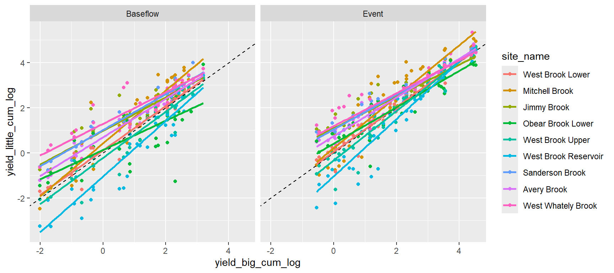
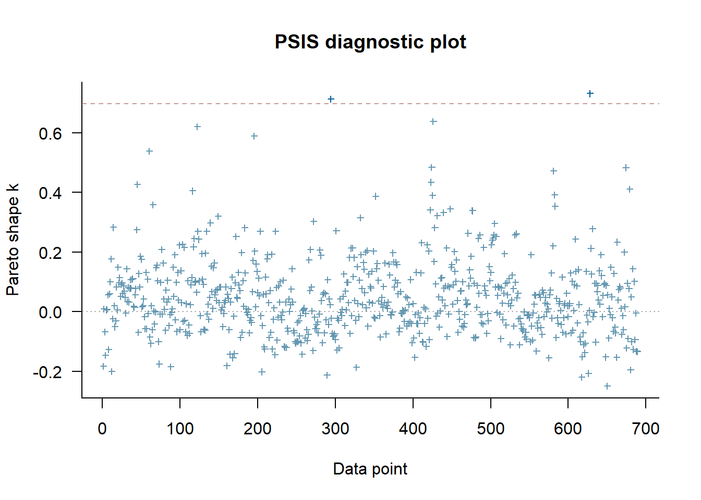
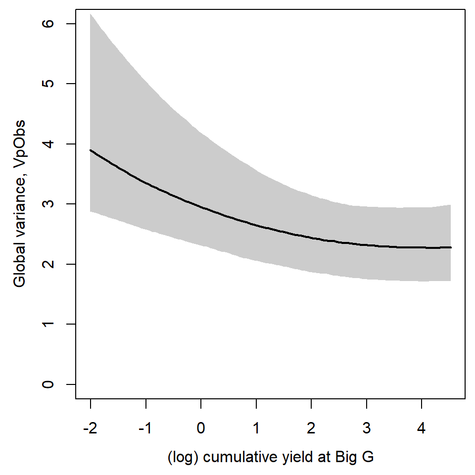
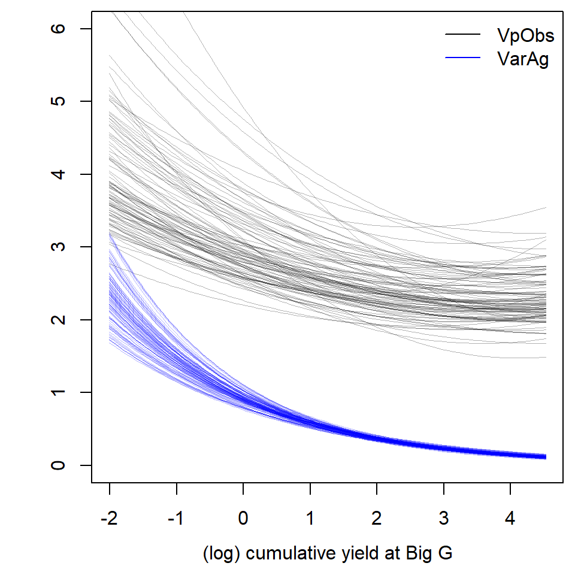
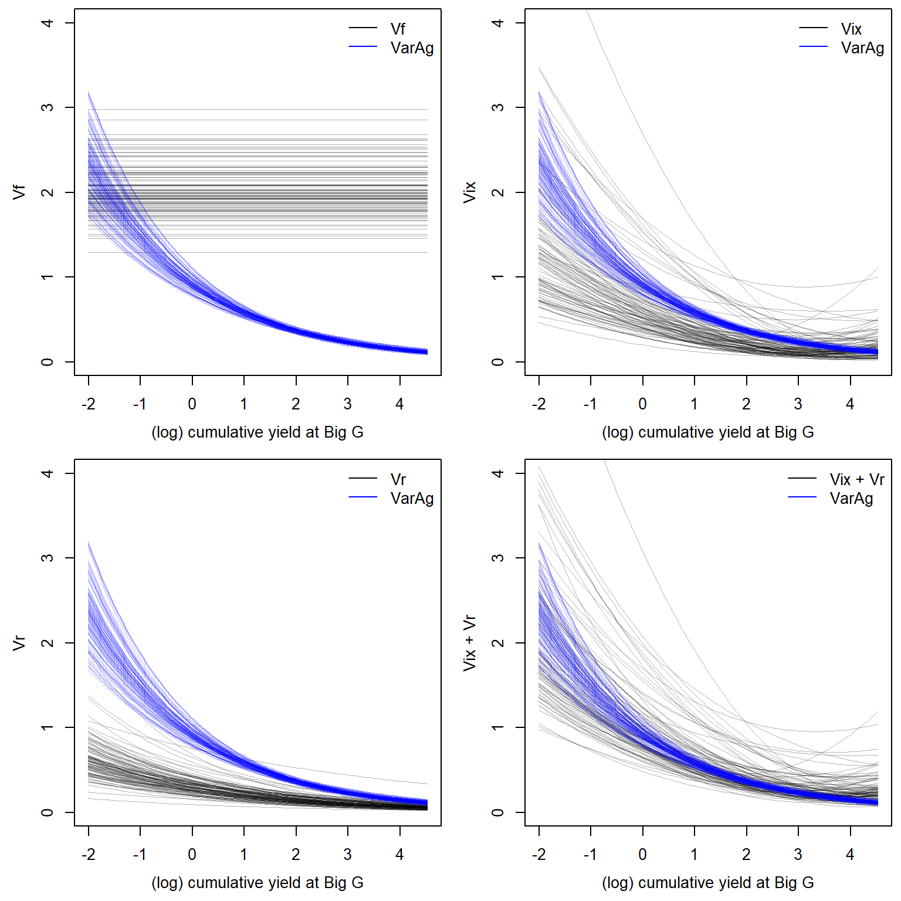
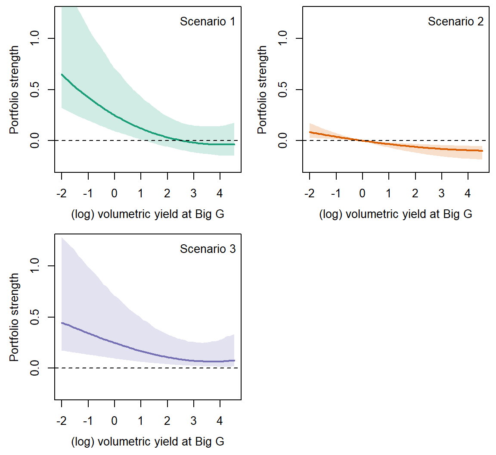

Purpose: Define the Wedge hypothesis and model in JAGS.
10.1 Q, H, A
Questions:
How does water availability (G) affect upstream diversity in streamflow regimes (g)?
How does streamflow diversity manifest as heterogeneity within and among locations in the upstream river network?
What are the relative contributions of within- and among-site diversity to the total streamflow diversity across the river network and does this change with water availability?
The Wedge Hypothesis: Among- and within-site diversity in g response to G drive spatiotemporal variation in flow across river networks
Among-site wedge: heterogeneity in physical characteristics among sites diversify little g response during low flows, but diversity in little g response attenuates (decreases) during high flows
Within-site wedge: within sites, variation in little g response to G is greater at low flows than at high flows
Additive diversity in the response of little g to Big G among and within sites drives total streamflow diversity across river networks
Approach
Break up data into manageable chunks using event/non-event delineation
Using Big G flow time series data, perform baseflow separation and event delineation to break up data into event and intervening non-event (baseflow) periods.
Apply Big G event/non-event periods to corresponding little g time series data and calculate (log) volumetric yield during each period for both G and g.
Using a Bayesian hierarchical model to account for site-level variation, model g ~ G, where g is (log) volumetric yield at little g and G is (log) volumetric yield at Big G during successive event/non-event periods.
Fit site-aware and site-agnostic models to describe within- and among-site diversity in g response to G, respectively.
Derive measures of observed and expected g variance dampening with increasing G under different assumptions regarding among- and within-site streamflow diversity
10.1.1 Conceptual diagram
The Wedge Hypothesis states that among- and within-site diversity in g response to G drive spatiotemporal variation in streamflow across entire river networks:
The Wedge Hypothesis - general
The hypothesis can be represented with a relatively simple hierarchical model:
The Wedge Hypothesis - parameters
From the fitted model, we can assess the relative contributions of within- and among-site diversity to total streamflow diversity across the river network and explore the extent to which this changes with water availability:
The Wedge Hypothesis - portfolio strength
10.2 Data
10.2.1 Site info and event data
Code
# site information and locationssiteinfo <-read_csv("C:/Users/jbaldock/OneDrive - DOI/Documents/USGS/EcoDrought/EcoDrought Working/Data/EcoDrought_SiteInformation.csv")siteinfo_sp <-st_as_sf(siteinfo, coords =c("long", "lat"), crs =4326)mapview(siteinfo_sp, zcol ="designation")
View relationship between Big G and little g, color by site, facet by event/non-event.
Code
dat %>%mutate(isevent = dplyr::recode(isevent, "1"="Event", "2"="Baseflow")) %>%ggplot(aes(x = yield_big_cum_log, y = yield_little_cum_log, group = site_name, color = site_name)) +geom_point() +geom_abline(intercept =0, slope =1, linetype ="dashed") +geom_smooth(method ="lm", se = F) +facet_wrap(~isevent)

Effect of (log) cumulative yield at Big G on (log) cumulative yield at little g during baseflow and event periods.
View relationship between Big G and little g, color by event/non-event, facet by site. For most sites (except may Obear Brook), G-g relationships are identical between events and non-event.
Code
dat %>%mutate(isevent = dplyr::recode(isevent, "1"="Event", "2"="Baseflow")) %>%ggplot(aes(x = yield_big_cum_log, y = yield_little_cum_log, group = isevent, color = isevent)) +geom_point() +geom_abline(intercept =0, slope =1, linetype ="dashed") +geom_smooth(method ="lm") +facet_wrap(~site_name)
Effect of (log) cumulative yield at Big G on (log) cumulative yield at little g during baseflow and event periods.
10.2.3 Examine hysteresis
Does the g~G relationship change over time?
Code
dat %>%mutate(doy =yday(mindate)) %>%ggplot(aes(x = yield_big_cum_log, y = yield_little_cum_log, color = doy)) +geom_point() +geom_abline(intercept =0, slope =1, linetype ="dashed") +scale_color_gradient2(midpoint =182, low ="orange", mid ="purple3", high ="orange") +facet_wrap(~site_name)
Effect of (log) cumulative yield at Big G on (log) cumulative yield at little g during baseflow and event periods. Points colored by day of year.
Code
dat %>%mutate(season =ifelse(month(mindate) %in%c(12,1,2), "winter",ifelse(month(mindate) %in%c(3,4,5), "spring",ifelse(month(mindate) %in%c(6,7,8), "summer", "autumn")))) %>%ggplot(aes(x = yield_big_cum_log, y = yield_little_cum_log, group = season, color = season)) +geom_point() +geom_abline(intercept =0, slope =1, linetype ="dashed") +geom_smooth(method ="lm") +facet_wrap(~site_name)
Effect of (log) cumulative yield at Big G on (log) cumulative yield at little g during baseflow and event periods, by season.
Yes, it does appear that the relationship between g and G changes is time-dependent, potentially motivating some inclusion of time as a covariate (and interaction with big G effect…circular regression?). However, this also likely drives the shape/existence of the little wedges. So, is it necessary to account for?
10.3 Declare model
Based on results above, there does not appear to be any significant difference in the G-g relationship for event and non-event periods. Therefore, do not include random intercepts/slopes (by event/non-event) in the model. Previously, I tried to estimate the G-g differences using an intercept model, with the magnitude of difference a function of water availability. However, when Q = Qg, this simplified to a linear regression between Qg (dependent var.) and QG (independent var.), which is ultimately what is of interest. I estimate this regression model below:
Correlation between site-level slopes and site-level intercepts is modeled as specified on pgs. 362 and 376 in Gelman and Hill (2007).
Data
Qg: log volumetric yield at little g
sites: numeric site id
QG: log volumetric yield at Big G
nObs: number of observations
nSites: number of sites (little g sites)
Parameters
alpha: site-level intercept
beta: site-level effect of Big G on little g (slope)
alpha.mu: global intercept
beta.mu: global effect of Big G on little g (slope)
alpha.sigma: site-level variability in the intercept
beta.sigma: site-level variability in the slope
sig.alpha: site-level intercept for process error
sig.beta: site-level effect of Big G on process error (slope)
sig.alpha.mu: global process error intercept
sig.beta.mu: global process error slope
sig.alpha.sigma: site-level variability in process error intercept
sig.beta.sigma: site-level variability in process error slope
rho: correlation between site-leve intercepts (alpha) and slopes (beta)
Derived values
predlg: predicted little g
diff: difference between predicted little g and Big G
VpObs: observed population variance, conditional on x
VpScen1: expected population variance, no within or among-site diversity
VpScen2: expected population variance, no within-site diversity
VpScen3: expected population variance, no among-size diversity
port1, port2, port3: predicted portfolio strength (over a range of G) compared to 3 alternative hypotheses
attenObs, atten1, atten2, atten3: attentuation strength (“wedginess”) of observed data and expected under 3 alternative hypotheses
Code
cat("model {##--- LIKELIHOOD ---------------------------------------------------##for (i in 1:nObs) { Qg[i] ~ dnorm(mu[i], pow(sigma[i], -2)) mu[i] <- alpha[sites[i]] + beta[sites[i]] * QG[i] log(sigma[i]) <- sig.alpha[sites[i]] + sig.beta[sites[i]] * QG[i] # Log-likelihood loglik[i] <- logdensity.norm(Qg[i], mu[i], pow(sigma[i], -2)) ## SITE AGNOSTIC Qg2[i] ~ dnorm(ag.mu[i], pow(ag.sigma[i], -2)) ag.mu[i] <- ag.alpha + ag.beta * QG[i] log(ag.sigma[i]) <- ag.sig.alpha + ag.sig.beta * QG[i] }##--- PRIORS --------------------------------------------------------### Site-specific parametersfor (j in 1:nSites) { alpha[j] <- B[j,1] beta[j] <- B[j,2] B[j,1:2] ~ dmnorm(B.hat[j,], Tau.B[,]) B.hat[j,1] <- alpha.mu B.hat[j,2] <- beta.mu sig.alpha[j] ~ dnorm(sig.alpha.mu, pow(sig.alpha.sigma, -2)) sig.beta[j] ~ dnorm(sig.beta.mu, pow(sig.beta.sigma, -2)) }# global parametersalpha.mu ~ dnorm(0, pow(10, -2))beta.mu ~ dnorm(0, pow(10, -2))sig.alpha.mu ~ dnorm(0, pow(10, -2))sig.beta.mu ~ dnorm(0, pow(10, -2))# variance-covariance matrix componentsTau.B[1:2,1:2] <- inverse(Sigma.B[,])Sigma.B[1,1] <- pow(alpha.sigma, 2)Sigma.B[2,2] <- pow(beta.sigma, 2)Sigma.B[1,2] <- rho * alpha.sigma * beta.sigmaSigma.B[2,1] <- Sigma.B[1,2]alpha.sigma ~ dunif(0.001, 100)beta.sigma ~ dunif(0.001, 100)rho ~ dunif(-1,1)# among-site variation in sigma parameterssig.alpha.sigma ~ dunif(0.001, 100)sig.beta.sigma ~ dunif(0.001, 100)## SITE AGNOSTICag.alpha ~ dnorm(0, pow(10, -2))ag.beta ~ dnorm(0, pow(10, -2))ag.sig.alpha ~ dnorm(0, pow(10, -2))ag.sig.beta ~ dnorm(0, pow(10, -2))##--- DERIVED VALUES ------------------------------------------------### expected deviation from Big Gfor (j in 1:nSites) { for (i in 1:nDiff) { predlg[j,i] <- alpha[j] + beta[j] * QGvec[i] diff[j,i] <- (alpha[j] + beta[j] * QGvec[i]) - QGvec[i] }}# variance decomposition and standardizationfor (i in 1:nDiff) { # observed population variance, conditional on x VpObs[i] <- ((beta.mu^2) * varx) + ((alpha.sigma^2) + ((QGvec[i]^2) * (beta.sigma^2)) + (2 * QGvec[i] * (rho * alpha.sigma * beta.sigma))) + ((exp(sig.alpha.mu + sig.beta.mu * QGvec[i]))^2) # expected population variance, no within or among-site diversity VpScen1[i] <- ((beta.mu^2) * varx) + ((exp(sig.alpha.mu))^2) # expected population variance, no within-site diversity VpScen2[i] <- ((beta.mu^2) * varx) + ((alpha.sigma^2) + ((QGvec[i]^2) * (beta.sigma^2)) + (2 * QGvec[i] * (rho * alpha.sigma * beta.sigma))) + ((exp(sig.alpha.mu))^2) # expected population variance, no among-size diversity VpScen3[i] <- ((beta.mu^2) * varx) + ((exp(sig.alpha.mu + sig.beta.mu * QGvec[i]))^2) # portfolio strength: how much more diversity in streamflow do we observe at the little g gages than expected under alternative (null) hypotheses? port1[i] <- VpObs[i] / VpScen1[i] port2[i] <- VpObs[i] / VpScen2[i] port3[i] <- VpObs[i] / VpScen3[i] # variance in raw response values, agnostic to site (i.e., variance in the sample) VarAg[i] <- (exp(ag.sig.alpha + ag.sig.beta * QGvec[i]))^2 Vf[i] <- (beta.mu^2) * varx Vix[i] <- (alpha.sigma^2) + ((QGvec[i]^2) * (beta.sigma^2)) + (2 * QGvec[i] * (rho * alpha.sigma * beta.sigma)) Vr[i] <- (exp(sig.alpha.mu + sig.beta.mu * QGvec[i]))^2}# attenuation strength: how much more diversity in streamflow (among little g gages) do we observe at low vs. high flows?attenObs <- VpObs[1] / VpObs[nDiff]atten1 <- VpScen1[1] / VpScen1[nDiff]atten2 <- VpScen2[1] / VpScen2[nDiff]atten3 <- VpScen3[1] / VpScen3[nDiff]}", file ="C:/Users/jbaldock/OneDrive - DOI/Documents/USGS/EcoDrought/EcoDrought Working/EcoDrought-Analysis/Big G Little g/JAGS Models/GgMod_Events_2_corr.txt")
Perform model selection using leave-one-out cross-validation (LOO-CV). Does the site-aware (random slopes/random intercepts) model perform better than the site-agnostic model?
Note: this will need to be updated once we add other random effects specifications. For now, use LOO-CV as an additional check on model fitting…i.e., examine Pareto k estimates.
Again, model is well specified for all but 1 data point (k > 1)
Computed from 2000 by 689 log-likelihood matrix.
Estimate SE
elpd_loo -426.9 26.6
p_loo 35.6 4.6
looic 853.7 53.2
------
MCSE of elpd_loo is NA.
MCSE and ESS estimates assume MCMC draws (r_eff in [0.8, 1.1]).
Pareto k diagnostic values:
Count Pct. Min. ESS
(-Inf, 0.7] (good) 687 99.7% 230
(0.7, 1] (bad) 2 0.3% <NA>
(1, Inf) (very bad) 0 0.0% <NA>
See help('pareto-k-diagnostic') for details.
Code
plot(loo1)

10.6 Plot model output
10.6.1 Slope-int. correlation
Slopes and intercepts are negatively correlated (this is not unexpected, and explains the attenuation/wedge shape of the data). As noted in Gelman and Hill, the strength of the correlation between slopes and intercepts is sensitive to how the data is centered (or not). Currently, data span 0 (in log space), so this isn’t really an artifact of the issues mentioned in Gelman and Hill (although if we mean centered the data this relationship does weaken slightly). It may actually make the most sense to force the intercept to be at the lowest value of log(G) (i.e., add min(log(G)) to all data, G and g). Intercepts would then represent the maximum expected variation in g during periods of lowest water availability. Alternatively, we could force the intercept to be at the highest valyes of log(G) (i.e., subtract max log(G) from all data) and test for random vs. fixed intercept (as suggested by Ben). Random intercepts would suggest that we still do see site-level variation in g when overall flows are high, whereas a fixed intercept would suggest minimal/no site-level variation in g at high flows. However, we do ultimately need to the slope/intercept correlation structure to do the variance decomposition.
par(mar =c(5,5,1,11), mfrow =c(1,1))gg_color_hue <-function(n) { hues =seq(15, 375, length = n +1) hcl(h = hues, l =65, c =100)[1:n] }mycols <-gg_color_hue(9)# combinedplot(seq(from =range(pred_arr)[1], to =range(pred_arr)[2], length.out = nvals) ~ x_seq, type ="n", xlab ="(log) cumulative yield at Big G", ylab ="(log) volumetric yield at little g")for (k in1:nsites) { polygon(x =c(x_seq, rev(x_seq)), y =c(pred_arr_summ[,1,k], rev(pred_arr_summ[,3,k])), col =alpha(mycols[k], 0.2), border =NA)lines(pred_arr_summ[,2,k] ~ x_seq, lwd =2, col = mycols[k])points(yield_little_cum_log ~ yield_big_cum_log, data = dat %>%filter(site_name_cd == k), col = mycols[k]) }abline(a =0, b =1, lty =2)legend("topleft", legend ="1:1", lty =2, bty ="n")par(xpd =TRUE)legend("topright", inset =c(-0.55, 0), legend =levels(dat$site_name), fill =alpha(mycols, 0.5), bty ="n")
Effect of (log) volumetric yield at Big G on (log) cumulative yield at little g.
10.6.3 Within-site variation
Here, I plot the effect of Big G yield on site-level variation in little g (i.e., sigma). How does site-specific variation in little g response to big G attenuate with increasing Big G?
Code
# control panelnvals <-100nsim <-dim(Mcmcdat_0)[1]nsites <-length(unique(dat$site_name_cd))x_seq <-seq(from =min(dat$yield_big_cum_log), to =max(dat$yield_big_cum_log), length.out = nvals)pred_arr <-array(NA, dim =c(nsim, nvals, nsites))pred_arr_summ <-array(NA, dim =c(3, nvals, nsites))for (k in1:nsites) {for (j in1:nsim) { pred_arr[j,,k] <- (exp(Mcmcdat_0[j,paste("sig.alpha[", k, "]", sep ="")] + Mcmcdat_0[j,paste("sig.beta[", k, "]", sep ="")] * x_seq)) }for (i in1:nvals) { pred_arr_summ[1,i,k] <-quantile(pred_arr[,i,k], probs =0.025) pred_arr_summ[2,i,k] <-quantile(pred_arr[,i,k], probs =0.5) pred_arr_summ[3,i,k] <-quantile(pred_arr[,i,k], probs =0.975) }}par(mar =c(5,5,1,11), mfrow =c(1,1))gg_color_hue <-function(n) { hues =seq(15, 375, length = n +1) hcl(h = hues, l =65, c =100)[1:n] }mycols <-gg_color_hue(9)# polygons as 95% CIsplot(seq(from =0, to =range(pred_arr_summ)[2], length.out = nvals) ~ x_seq, type ="n", xlab ="(log) cumulative yield at Big G", ylab ="Within-site variation in little g, sigma")for (k in1:nsites) { polygon(x =c(x_seq, rev(x_seq)), y =c(pred_arr_summ[1,,k], rev(pred_arr_summ[3,,k])), col =alpha(mycols[k], 0.2), border =NA)lines(pred_arr_summ[2,,k] ~ x_seq, col = mycols[k], lwd =2)}par(xpd =TRUE)legend("topright", inset =c(-0.55, 0), legend =levels(dat$site_name), fill =alpha(mycols, 0.5), bty ="n")
Increasing water availability decreases site-level heterogeneity in little g response to Big G. Lines and polygons represent the median and 95% credible interval of the relationship for each site (color).
10.6.4 Among-site variation
Here, I plot the effect of Big G yield on global (i.e., among-site) variation in little g. How does among-site variation in little g response to big G attenuate with increasing Big G? This is a derived parameter: the square root of the “phenotypic variance†(conditional on x) as defined in Shielzeth and Nakagawa (2022).
From S&N: “We note that the phenotypic variance VP as we calculate it here as the sum of additive variance components might differ slightly from the variance in response values as estimated from the raw data (Rights & Sterba, 2020). The difference is that the sum of the variance components aims to estimate the population variance while the variance in raw response values represents to variance in the sample. Since the population variance is what is relevant to biological interpretation (de Villemereuil et al., 2018), the sum of additive components is usually preferable.”
par(mar =c(4,4,0.5,0.5), mgp =c(2.5,1,0))plot(seq(from =0, to =6, length.out = ndiff) ~ QGvec, type ="n", xlab ="(log) cumulative yield at Big G", ylab ="Global variance, VpObs")polygon(x =c(QGvec, rev(QGvec)), y =c(pred_arr_summ[,1], rev(pred_arr_summ[,3])), col =alpha("black", 0.2), border =NA)lines(pred_arr_summ[,2] ~ QGvec, col ="black", lwd =2)

Increasing water availability decreases among-site heterogeneity in little g response to Big G. Line and polygon represent the median and 95% credible interval of the relationship.
Visually comparing the figure above with the data/regression fits figure, it seems like there is not as much variation in VpObs with x in the plot above as there “should†be. In the plot below, I directly compare the population variance (VpObs) with the sample variance (VarAg), derived from the site-agnostic model). While Schielzeth and Nakagawa (2022) state that the population and sample standard deviations (variances) may “differ slightly†(pg. 1216), the difference as plotted below seems quite large, which leads me to wonder if the variance decomposition model is specified correctly…
Code
par(mar =c(4,4,0.5,0.5), mgp =c(2.5,1,0))nsim <-100plot(seq(from =0, to =6, length.out = ndiff) ~ QGvec, type ="n", xlab ="(log) cumulative yield at Big G", ylab ="")for (i in1:nsim) { lines((Mcmcdat_0[i, str_subset(colnames(Mcmcdat_0), pattern ="VpObs")]) ~ QGvec, col =alpha("black", 0.3), lwd =0.5) }for (i in1:nsim) { lines((Mcmcdat_0[i, str_subset(colnames(Mcmcdat_0), pattern ="VarAg")]) ~ QGvec, col =alpha("blue", 0.3), lwd =0.5) }legend("topright", legend =c("VpObs", "VarAg"), lty =1, col =c("black", "blue"), bty ="n")

So what drives this difference? Below I plot the three components of Vp: Vf, Vix, and Vr, and the sum of Vix and Vr. The difference in VpObs and VarAg in the plot of above is driven in large part by the constant Vf, the variance explained by the fixed effects. Note that VarAg is the residual variance from the site-agnostic model, and thus does not include variance explained by fixed effects. For the site-aware model, the best approximation of VarAg is Vix + Vr, the between/amomg-site variance plus the residual variance (within site).
Code
par(mar =c(4,4,0.5,0.5), mgp =c(2.5,1,0), mfrow =c(2,2))nsim <-100# Vfplot(seq(from =0, to =4, length.out = ndiff) ~ QGvec, type ="n", xlab ="(log) cumulative yield at Big G", ylab ="Vf")for (i in1:nsim) { lines((Mcmcdat_0[i, str_subset(colnames(Mcmcdat_0), pattern ="Vf")]) ~ QGvec, col =alpha("black", 0.3), lwd =0.5) }for (i in1:nsim) { lines((Mcmcdat_0[i, str_subset(colnames(Mcmcdat_0), pattern ="VarAg")]) ~ QGvec, col =alpha("blue", 0.3), lwd =0.5) }legend("topright", legend =c("Vf", "VarAg"), lty =1, col =c("black", "blue"), bty ="n")# Vixplot(seq(from =0, to =4, length.out = ndiff) ~ QGvec, type ="n", xlab ="(log) cumulative yield at Big G", ylab ="Vix")for (i in1:nsim) { lines((Mcmcdat_0[i, str_subset(colnames(Mcmcdat_0), pattern ="Vix")]) ~ QGvec, col =alpha("black", 0.3), lwd =0.5) }for (i in1:nsim) { lines((Mcmcdat_0[i, str_subset(colnames(Mcmcdat_0), pattern ="VarAg")]) ~ QGvec, col =alpha("blue", 0.3), lwd =0.5) }legend("topright", legend =c("Vix", "VarAg"), lty =1, col =c("black", "blue"), bty ="n")# Vrplot(seq(from =0, to =4, length.out = ndiff) ~ QGvec, type ="n", xlab ="(log) cumulative yield at Big G", ylab ="Vr")for (i in1:nsim) { lines((Mcmcdat_0[i, str_subset(colnames(Mcmcdat_0), pattern ="Vr")]) ~ QGvec, col =alpha("black", 0.3), lwd =0.5) }for (i in1:nsim) { lines((Mcmcdat_0[i, str_subset(colnames(Mcmcdat_0), pattern ="VarAg")]) ~ QGvec, col =alpha("blue", 0.3), lwd =0.5) }legend("topright", legend =c("Vr", "VarAg"), lty =1, col =c("black", "blue"), bty ="n")# Vix + Vrplot(seq(from =0, to =4, length.out = ndiff) ~ QGvec, type ="n", xlab ="(log) cumulative yield at Big G", ylab ="Vix + Vr")for (i in1:nsim) { lines((Mcmcdat_0[i, str_subset(colnames(Mcmcdat_0), pattern ="Vix")]) + (Mcmcdat_0[i, str_subset(colnames(Mcmcdat_0), pattern ="Vr")]) ~ QGvec, col =alpha("black", 0.3), lwd =0.5) }for (i in1:nsim) { lines((Mcmcdat_0[i, str_subset(colnames(Mcmcdat_0), pattern ="VarAg")]) ~ QGvec, col =alpha("blue", 0.3), lwd =0.5) }legend("topright", legend =c("Vix + Vr", "VarAg"), lty =1, col =c("black", "blue"), bty ="n")

Why does this matter?
The best way to compare the plot of within-site variation in little g (sigma ~ G) and among-site variation in little g is probably to use the sum of Vix and Vr, ignoring Vf, as within-site variation (sigma) also effectively ignores fixed effect variance.
For calculation of portfolio effects, it likely does not matter as all variance scenarios contain the constant and thus the constant is divided out
But for calculation of attenuation strength, it appears to lead to substantial underestimates of attenuation, i.e., “wedginess”. Attenuation strength is a ratio between variation at low vs high levels of G, so when a constant is added to both the numerator and denominator, the absolute difference is the same but the relative difference can be quite different
Consider the following. 4 / 2 = 2 and 3 / 1 = 3. In both cases the absolute difference is the same (1) but the relative difference changes (2 vs. 3).
10.6.5 Portfolio strength
First plot population/phenotypic variances, conditional on QG
# plotmycols <-c(brewer.pal(3, "Dark2"), "black")par(mar =c(4,4,0.5,0.5), mgp =c(2.5,1,0), mfrow =c(2,2))# VpScen1plot(seq(from =1, to =6, length.out = ndiff) ~ QGvec, type ="n", xlab ="(log) cumulative yield at Big G", ylab ="Variance")polygon(x =c(QGvec, rev(QGvec)), y =c(pred_arr_VpScen1_summ[,1], rev(pred_arr_VpScen1_summ[,3])), col =alpha(mycols[1], 0.2), border =NA)lines(pred_arr_VpScen1_summ[,2] ~ QGvec, col = mycols[1], lwd =2)legend("topright", legend ="Scenario 1", bty ="n")# VpScen2plot(seq(from =1, to =6, length.out = ndiff) ~ QGvec, type ="n", xlab ="(log) cumulative yield at Big G", ylab ="Variance")polygon(x =c(QGvec, rev(QGvec)), y =c(pred_arr_VpScen2_summ[,1], rev(pred_arr_VpScen2_summ[,3])), col =alpha(mycols[2], 0.2), border =NA)lines(pred_arr_VpScen2_summ[,2] ~ QGvec, col = mycols[2], lwd =2)legend("topright", legend ="Scenario 2", bty ="n")# VpScen3plot(seq(from =1, to =6, length.out = ndiff) ~ QGvec, type ="n", xlab ="(log) cumulative yield at Big G", ylab ="Variance")polygon(x =c(QGvec, rev(QGvec)), y =c(pred_arr_VpScen3_summ[,1], rev(pred_arr_VpScen3_summ[,3])), col =alpha(mycols[3], 0.2), border =NA)lines(pred_arr_VpScen3_summ[,2] ~ QGvec, col = mycols[3], lwd =2)legend("topright", legend ="Scenario 3", bty ="n")# VpObsplot(seq(from =1, to =6, length.out = ndiff) ~ QGvec, type ="n", xlab ="(log) cumulative yield at Big G", ylab ="Variance")polygon(x =c(QGvec, rev(QGvec)), y =c(pred_arr_VpObs_summ[,1], rev(pred_arr_VpObs_summ[,3])), col =alpha(mycols[4], 0.2), border =NA)lines(pred_arr_VpObs_summ[,2] ~ QGvec, col = mycols[4], lwd =2)legend("topright", legend ="Observed", bty ="n")
Effect of water availability (log cumulative yield at Big G) on population variance in little g expected under three alternative (null) hypotheses and for observed data.
Now to show portfolio strength: How much more variable is the observed data than what is expected under three (null) alternative hypotheses?
Note: subtracted 1 from ratios so values >0 indicate the observed data is more variable than expected and values <0 indicate the observed data is less variable than expected
# plotmycols <-c(brewer.pal(3, "Dark2"), "black")par(mar =c(4,4,0.5,0.5), mgp =c(2.5,1,0), mfrow =c(2,2))ylim1 <--0.25ylim2 <-1.25# VpScen1plot(seq(from = ylim1, to = ylim2, length.out = ndiff) ~ QGvec, type ="n", xlab ="(log) volumetric yield at Big G", ylab ="Portfolio strength")polygon(x =c(QGvec, rev(QGvec)), y =c(pred_arr_Port1_summ[,1], rev(pred_arr_Port1_summ[,3])), col =alpha(mycols[1], 0.2), border =NA)lines(pred_arr_Port1_summ[,2] ~ QGvec, col = mycols[1], lwd =2)legend("topright", legend ="Scenario 1", bty ="n")abline(h =0, lty =2)# VpScen2plot(seq(from = ylim1, to = ylim2, length.out = ndiff) ~ QGvec, type ="n", xlab ="(log) volumetric yield at Big G", ylab ="Portfolio strength")polygon(x =c(QGvec, rev(QGvec)), y =c(pred_arr_Port2_summ[,1], rev(pred_arr_Port2_summ[,3])), col =alpha(mycols[2], 0.2), border =NA)lines(pred_arr_Port2_summ[,2] ~ QGvec, col = mycols[2], lwd =2)legend("topright", legend ="Scenario 2", bty ="n")abline(h =0, lty =2)# VpScen3plot(seq(from = ylim1, to = ylim2, length.out = ndiff) ~ QGvec, type ="n", xlab ="(log) volumetric yield at Big G", ylab ="Portfolio strength")polygon(x =c(QGvec, rev(QGvec)), y =c(pred_arr_Port3_summ[,1], rev(pred_arr_Port3_summ[,3])), col =alpha(mycols[3], 0.2), border =NA)lines(pred_arr_Port3_summ[,2] ~ QGvec, col = mycols[3], lwd =2)legend("topright", legend ="Scenario 3", bty ="n")abline(h =0, lty =2)

10.6.6 Attenuation Strength
To what degree does diversity in streamflow regimes attenuate with increasing Big G? Attenuation strength is calculated as the variance at min G divided by variance at max G four our observed data and three alternative hypotheses. Note that for scenario 1, variance is constant over G and thus would equal 1. Therefore, a value of 1 represents no attenuation. These figures may provide a standardized approach to comparing “wedginess†across basins.
Code
mycols <-c(brewer.pal(3, "Dark2"), "black")par(mar =c(5,5,1,1), mfrow =c(1,1))plot(seq(from =0, to =1, length.out =100) ~seq(from =0.5, to =3, length.out =100), type ="n", xlab ="Attenuation strength", ylab ="Density")# observedobs_den <-density(Mcmcdat_0[,"attenObs"])obs_den$y2 <- obs_den$y /max(obs_den$y)obs_l <-min(which(obs_den$x >=hdi(obs_den, credMass =0.95)[1]))obs_h <-max(which(obs_den$x <hdi(obs_den, credMass =0.95)[2]))polygon(x =c(obs_den$x[c(obs_l,obs_l:obs_h,obs_h)]), y =c(0,obs_den$y2[obs_l:obs_h],0), col =alpha(mycols[4], 0.3), lty =0)lines(obs_den$y2 ~ obs_den$x, col = mycols[4], lwd =2)# scenario 2exp_den <-density(Mcmcdat_0[,"atten2"])exp_den$y2 <- exp_den$y /max(exp_den$y)exp_l <-min(which(exp_den$x >=hdi(exp_den, credMass =0.95)[1]))exp_h <-max(which(exp_den$x <hdi(exp_den, credMass =0.95)[2]))polygon(x =c(exp_den$x[c(exp_l,exp_l:exp_h,exp_h)]), y =c(0,exp_den$y2[exp_l:exp_h],0), col =alpha(mycols[2], 0.3), lty =0)lines(exp_den$y2 ~ exp_den$x, col = mycols[2], lwd =2)# scenario 3exp_den <-density(Mcmcdat_0[,"atten3"])exp_den$y2 <- exp_den$y /max(exp_den$y)exp_l <-min(which(exp_den$x >=hdi(exp_den, credMass =0.95)[1]))exp_h <-max(which(exp_den$x <hdi(exp_den, credMass =0.95)[2]))polygon(x =c(exp_den$x[c(exp_l,exp_l:exp_h,exp_h)]), y =c(0,exp_den$y2[exp_l:exp_h],0), col =alpha(mycols[3], 0.3), lty =0)lines(exp_den$y2 ~ exp_den$x, col = mycols[3], lwd =2)legend("topright", legend =c("Scenario 1", "Scenario 2", "Scenario 3", "Observed"), fill =alpha(mycols, 0.3), bty ="n")abline(v =1, lty =1, lwd =2, col = mycols[1])
10.7 DEPRECATED
Code
# vector of QG for predictionndiff <-100QGvec <-seq(from =min(dat$yield_big_cum_log), to =max(dat$yield_big_cum_log), length.out = ndiff)# gather data for JAGSjags.data <-list("nObs"=dim(dat)[1], "nSites"=length(unique(dat$site_name_cd)), "sites"= dat$site_name_cd, #"indev" = dat_wb2$isevent,"Qg"= dat$yield_little_cum_log, "Qg2"= dat$yield_little_cum_log, "QG"= dat$yield_big_cum_log, "QGvec"= QGvec, "nDiff"= ndiff)# parameters to monitorjags.params <-c("alpha", "beta", "alpha.mu", "beta.mu", "alpha.sigma", "beta.sigma", "sig.alpha", "sig.beta", "sig.alpha.mu", "sig.beta.mu", "sig.alpha.sigma", "sig.beta.sigma", "ag.alpha", "ag.beta", "ag.sig.alpha", "ag.sig.beta","diff", "predlg", "loglik", "loglik2", "mu", "Qg", "portfolio1", "portfolio3", "atten3", "attenObs")# run in jagsmod_0 <-jags.parallel(data = jags.data, inits =NULL, parameters.to.save = jags.params,model.file ="C:/Users/jbaldock/OneDrive - DOI/Documents/USGS/EcoDrought/EcoDrought Working/EcoDrought-Analysis/Big G Little g/JAGS Models/GgMod_Events_2.txt",n.chains =10, n.thin =20, n.burnin =1000, n.iter =5000, DIC =FALSE)# saveRDS(mod_0, "C:/Users/jbaldock/OneDrive - DOI/Documents/USGS/EcoDrought/EcoDrought Working/EcoDrought-Analysis/Big G Little g/JAGS Models/Fitted models/GgMod_Events.rds")
Here, I plot the effect of Big G yield on global (i.e., among-site) variation in little g from the site-agnostic model. How does among-site variation in little g response to big G attenuate with increasing Big G? Note that this only considers the sites we have data for, not all possible locations in the river network. This could potentially be achieved by simulating data for new sites (see pg. 362 in Gelman and Hill, 2007), but would likely need to add slope-intercept correlation structure to the model to ensure that attenuation in preserved (see pg. 376 in Gelman and Hill).
We can visualize this another way, as site-specific differences between little g and Big G at different levels of water availability/Big G flow. This is ~equivalent to the plot above, but provides a site-level examination of Qg variation around QG and how those change over the range of Big G flow.
10.7.0.1 Null model simulations
How much among-site variation in little G response to Big G might we expect assuming homogeneity in flow regimes? This is the null hypotheses. Although I’m not sure this is the proper way to do this…for each of n sites, I randomly sample from the posterior distributions of alpha.mu and beta.mu to generate site-specific relationships that all follow the global parameters/relationships.
Here’s an example of an individual simulation…
Portfolio strength
There are probably better ways to do this, but here I’m quantifying/visualizing what I’m calling “portfolio strength”, or the degree of heterogeneity in streamflow regimes across the network, as a function of water availability (big G flow). Portfolio strength is calculated as the (median) observed among-site variation in little G divided by the (median) expected/simulated among site variation in little g assuming flow homogeneity. Thus, values >1 and <1 indicate greater and less heterogeneity in streamflow than expected under the assumption of homogeneity, respectively. I think this would be a good way to compare/standardize among basins.
Alternatively, portfolio strength can be defined as the ratio between among-site variation in little g at low vs. high values of Big G (sensu Chezik et al. 2017)…so we get distributions for observed and expected values, where a value of 1 indicates no portfolio behavior (no streamflow diversity at different levels of Big G). I don’t think this makes sense because the whole point is the evaluation how diversity in flow regimes (i.e., portfolio strength) changes with water availability.
10.7.1 Agnostic to sites
This model evaluates the G-g relationship and the effect of G on sigma, but ignores site groupings. With respect to the sigma~G relationship, this is essentially what I am trying to reconstruct above using derived values.
10.7.1.1 Fit the JAGS model
Get MCMC samples and summary
10.7.1.2 View traceplots
10.7.1.3 Effect of G on sigma
Here, I plot the effects of Big G yield on among-site variation in little g (i.e., sigma). This describes the effect of water availability on network-wide heterogeneity in streamflow.
10.7.2 Porfolio strength
How much more heterogeneous is observed little g streamflow at different levels of water availability (Big G) relative to our expectations if among- and within-site streamflow diversity is eroded? What does this tell us about the relative contributions of within- and among-site diversity to the total streamflow diversity across the river network?
Portfolio strength is calculated as the observed variance divided by expected variance under different scenarios in which diversity is eroded. These relationships may provide a standardized approach to comparing “wedginess†across basins
10.7.3 Attenuation strength
To what degree does diversity in streamflow regimes attenuate with increasing Big G? Attenuation strength is calculated as the variance at min G divided by variance at max G four our observed data and relevant scenarios. Note that for scenario 1, variance is constant over G and thus would equal 1. Therfore, a value of 1 represents no attenuation. These figures may provide a standardized approach to comparing “wedginess†across basins.
Source Code
---title: "The Wedge Model"---Purpose: Define the Wedge hypothesis and model in JAGS.```{r echo=FALSE, message=FALSE}library(tidyverse)library(sf)library(mapview)library(knitr)library(fasstr)library(RColorBrewer)library(scales)library(dygraphs)library(GGally)library(R2jags)library(MCMCvis)library(loo)library(HDInterval)library(loo)library(ggpubr)```## Q, H, A**Questions:**1. How does water availability (G) affect *upstream* diversity in streamflow regimes (g)? a. How does streamflow diversity manifest as heterogeneity *within* and *among* locations in the upstream river network?2. What are the relative contributions of within- and among-site diversity to the total streamflow diversity across the river network and does this change with water availability?**The Wedge Hypothesis:** Among- and within-site diversity in g response to G drive spatiotemporal variation in flow across river networks1. Among-site wedge: heterogeneity in physical characteristics among sites diversify little g response during low flows, but diversity in little g response attenuates (decreases) during high flows2. Within-site wedge: within sites, variation in little g response to G is greater at low flows than at high flows 3. Additive diversity in the response of little g to Big G among and within sites drives total streamflow diversity across river networks**Approach**1. Break up data into manageable chunks using event/non-event delineation a. Using Big G flow time series data, perform baseflow separation and event delineation to break up data into event and intervening non-event (baseflow) periods. b. Apply Big G event/non-event periods to corresponding little g time series data and calculate (log) volumetric yield during each period for both G and g. 2. Using a Bayesian hierarchical model to account for site-level variation, model g ~ G, where g is (log) volumetric yield at little g and G is (log) volumetric yield at Big G during successive event/non-event periods. a. Fit site-aware and site-agnostic models to describe within- and among-site diversity in g response to G, respectively. b. Derive measures of observed and expected g variance dampening with increasing G under different assumptions regarding among- and within-site streamflow diversity### Conceptual diagramThe Wedge Hypothesis states that among- and within-site diversity in g response to G drive spatiotemporal variation in streamflow across entire river networks:The hypothesis can be represented with a relatively simple hierarchical model:From the fitted model, we can assess the relative contributions of within- and among-site diversity to total streamflow diversity across the river network and explore the extent to which this changes with water availability:## Data### Site info and event data```{r}# site information and locationssiteinfo <-read_csv("C:/Users/jbaldock/OneDrive - DOI/Documents/USGS/EcoDrought/EcoDrought Working/Data/EcoDrought_SiteInformation.csv")siteinfo_sp <-st_as_sf(siteinfo, coords =c("long", "lat"), crs =4326)mapview(siteinfo_sp, zcol ="designation")# delineated event/non-event volumetric yield data dat <-read_csv("C:/Users/jbaldock/OneDrive - DOI/Documents/USGS/EcoDrought/EcoDrought Working/EcoDrought-Analysis/Event Delineation/EcoDrought_Data_EventNonEvent_WestBrookonly.csv") %>%mutate(site_name =factor(site_name, levels =c("West Brook Lower", "Mitchell Brook", "Jimmy Brook", "Obear Brook Lower", "West Brook Upper", "West Brook Reservoir", "Sanderson Brook", "Avery Brook", "West Whately Brook")))str(dat)```### Visualize g~G relationshipsView relationship between Big G and little g, color by site, facet by event/non-event.```{r, fig.height=4, fig.width=9}#| fig-cap: "Effect of (log) cumulative yield at Big G on (log) cumulative yield at little g during baseflow and event periods."dat %>% mutate(isevent = dplyr::recode(isevent, "1" = "Event", "2" = "Baseflow")) %>% ggplot(aes(x = yield_big_cum_log, y = yield_little_cum_log, group = site_name, color = site_name)) + geom_point() + geom_abline(intercept = 0, slope = 1, linetype = "dashed") + geom_smooth(method = "lm", se = F) + facet_wrap(~isevent)```View relationship between Big G and little g, color by event/non-event, facet by site. For most sites (except may Obear Brook), G-g relationships are identical between events and non-event.```{r, fig.height=7, fig.width=8}#| fig-cap: "Effect of (log) cumulative yield at Big G on (log) cumulative yield at little g during baseflow and event periods."dat %>% mutate(isevent = dplyr::recode(isevent, "1" = "Event", "2" = "Baseflow")) %>% ggplot(aes(x = yield_big_cum_log, y = yield_little_cum_log, group = isevent, color = isevent)) + geom_point() + geom_abline(intercept = 0, slope = 1, linetype = "dashed") + geom_smooth(method = "lm") + facet_wrap(~site_name)```### Examine hysteresisDoes the g~G relationship change over time? ```{r, fig.height=7, fig.width=8}#| fig-cap: "Effect of (log) cumulative yield at Big G on (log) cumulative yield at little g during baseflow and event periods. Points colored by day of year."dat %>% mutate(doy = yday(mindate)) %>% ggplot(aes(x = yield_big_cum_log, y = yield_little_cum_log, color = doy)) + geom_point() + geom_abline(intercept = 0, slope = 1, linetype = "dashed") + scale_color_gradient2(midpoint = 182, low = "orange", mid = "purple3", high = "orange") + facet_wrap(~site_name)``````{r, fig.height=7, fig.width=8}#| fig-cap: "Effect of (log) cumulative yield at Big G on (log) cumulative yield at little g during baseflow and event periods, by season."dat %>% mutate(season = ifelse(month(mindate) %in% c(12,1,2), "winter", ifelse(month(mindate) %in% c(3,4,5), "spring", ifelse(month(mindate) %in% c(6,7,8), "summer", "autumn")))) %>% ggplot(aes(x = yield_big_cum_log, y = yield_little_cum_log, group = season, color = season)) + geom_point() + geom_abline(intercept = 0, slope = 1, linetype = "dashed") + geom_smooth(method = "lm") + facet_wrap(~site_name)```Yes, it does appear that the relationship between g and G changes is time-dependent, potentially motivating some inclusion of time as a covariate (and interaction with big G effect...circular regression?). However, this also likely drives the shape/existence of the little wedges. So, is it necessary to account for?## Declare modelBased on results above, there does not appear to be any significant difference in the G-g relationship for event and non-event periods. Therefore, do not include random intercepts/slopes (by event/non-event) in the model. Previously, I tried to estimate the G-g differences using an intercept model, with the magnitude of difference a function of water availability. However, when Q = Qg, this simplified to a linear regression between Qg (dependent var.) and QG (independent var.), which is ultimately what is of interest. I estimate this regression model below:Correlation between site-level slopes and site-level intercepts is modeled as specified on pgs. 362 and 376 in Gelman and Hill (2007).* Data + *Qg*: log volumetric yield at little g + *sites*: numeric site id + *QG*: log volumetric yield at Big G + *nObs*: number of observations + *nSites*: number of sites (little g sites)* Parameters + *alpha*: site-level intercept + *beta*: site-level effect of Big G on little g (slope) + *alpha.mu*: global intercept + *beta.mu*: global effect of Big G on little g (slope) + *alpha.sigma*: site-level variability in the intercept + *beta.sigma*: site-level variability in the slope + *sig.alpha*: site-level intercept for process error + *sig.beta*: site-level effect of Big G on process error (slope) + *sig.alpha.mu*: global process error intercept + *sig.beta.mu*: global process error slope + *sig.alpha.sigma*: site-level variability in process error intercept + *sig.beta.sigma*: site-level variability in process error slope + *rho*: correlation between site-leve intercepts (*alpha*) and slopes (*beta*)* Derived values + *predlg*: predicted little g + *diff*: difference between predicted little g and Big G + *VpObs*: observed population variance, conditional on x + *VpScen1*: expected population variance, no within or among-site diversity + *VpScen2*: expected population variance, no within-site diversity + *VpScen3*: expected population variance, no among-size diversity + *port1*, *port2*, *port3*: predicted portfolio strength (over a range of G) compared to 3 alternative hypotheses + *attenObs*, *atten1*, *atten2*, *atten3*: attentuation strength ("wedginess") of observed data and expected under 3 alternative hypotheses```{r}cat("model {##--- LIKELIHOOD ---------------------------------------------------##for (i in 1:nObs) { Qg[i] ~ dnorm(mu[i], pow(sigma[i], -2)) mu[i] <- alpha[sites[i]] + beta[sites[i]] * QG[i] log(sigma[i]) <- sig.alpha[sites[i]] + sig.beta[sites[i]] * QG[i] # Log-likelihood loglik[i] <- logdensity.norm(Qg[i], mu[i], pow(sigma[i], -2)) ## SITE AGNOSTIC Qg2[i] ~ dnorm(ag.mu[i], pow(ag.sigma[i], -2)) ag.mu[i] <- ag.alpha + ag.beta * QG[i] log(ag.sigma[i]) <- ag.sig.alpha + ag.sig.beta * QG[i] }##--- PRIORS --------------------------------------------------------### Site-specific parametersfor (j in 1:nSites) { alpha[j] <- B[j,1] beta[j] <- B[j,2] B[j,1:2] ~ dmnorm(B.hat[j,], Tau.B[,]) B.hat[j,1] <- alpha.mu B.hat[j,2] <- beta.mu sig.alpha[j] ~ dnorm(sig.alpha.mu, pow(sig.alpha.sigma, -2)) sig.beta[j] ~ dnorm(sig.beta.mu, pow(sig.beta.sigma, -2)) }# global parametersalpha.mu ~ dnorm(0, pow(10, -2))beta.mu ~ dnorm(0, pow(10, -2))sig.alpha.mu ~ dnorm(0, pow(10, -2))sig.beta.mu ~ dnorm(0, pow(10, -2))# variance-covariance matrix componentsTau.B[1:2,1:2] <- inverse(Sigma.B[,])Sigma.B[1,1] <- pow(alpha.sigma, 2)Sigma.B[2,2] <- pow(beta.sigma, 2)Sigma.B[1,2] <- rho * alpha.sigma * beta.sigmaSigma.B[2,1] <- Sigma.B[1,2]alpha.sigma ~ dunif(0.001, 100)beta.sigma ~ dunif(0.001, 100)rho ~ dunif(-1,1)# among-site variation in sigma parameterssig.alpha.sigma ~ dunif(0.001, 100)sig.beta.sigma ~ dunif(0.001, 100)## SITE AGNOSTICag.alpha ~ dnorm(0, pow(10, -2))ag.beta ~ dnorm(0, pow(10, -2))ag.sig.alpha ~ dnorm(0, pow(10, -2))ag.sig.beta ~ dnorm(0, pow(10, -2))##--- DERIVED VALUES ------------------------------------------------### expected deviation from Big Gfor (j in 1:nSites) { for (i in 1:nDiff) { predlg[j,i] <- alpha[j] + beta[j] * QGvec[i] diff[j,i] <- (alpha[j] + beta[j] * QGvec[i]) - QGvec[i] }}# variance decomposition and standardizationfor (i in 1:nDiff) { # observed population variance, conditional on x VpObs[i] <- ((beta.mu^2) * varx) + ((alpha.sigma^2) + ((QGvec[i]^2) * (beta.sigma^2)) + (2 * QGvec[i] * (rho * alpha.sigma * beta.sigma))) + ((exp(sig.alpha.mu + sig.beta.mu * QGvec[i]))^2) # expected population variance, no within or among-site diversity VpScen1[i] <- ((beta.mu^2) * varx) + ((exp(sig.alpha.mu))^2) # expected population variance, no within-site diversity VpScen2[i] <- ((beta.mu^2) * varx) + ((alpha.sigma^2) + ((QGvec[i]^2) * (beta.sigma^2)) + (2 * QGvec[i] * (rho * alpha.sigma * beta.sigma))) + ((exp(sig.alpha.mu))^2) # expected population variance, no among-size diversity VpScen3[i] <- ((beta.mu^2) * varx) + ((exp(sig.alpha.mu + sig.beta.mu * QGvec[i]))^2) # portfolio strength: how much more diversity in streamflow do we observe at the little g gages than expected under alternative (null) hypotheses? port1[i] <- VpObs[i] / VpScen1[i] port2[i] <- VpObs[i] / VpScen2[i] port3[i] <- VpObs[i] / VpScen3[i] # variance in raw response values, agnostic to site (i.e., variance in the sample) VarAg[i] <- (exp(ag.sig.alpha + ag.sig.beta * QGvec[i]))^2 Vf[i] <- (beta.mu^2) * varx Vix[i] <- (alpha.sigma^2) + ((QGvec[i]^2) * (beta.sigma^2)) + (2 * QGvec[i] * (rho * alpha.sigma * beta.sigma)) Vr[i] <- (exp(sig.alpha.mu + sig.beta.mu * QGvec[i]))^2}# attenuation strength: how much more diversity in streamflow (among little g gages) do we observe at low vs. high flows?attenObs <- VpObs[1] / VpObs[nDiff]atten1 <- VpScen1[1] / VpScen1[nDiff]atten2 <- VpScen2[1] / VpScen2[nDiff]atten3 <- VpScen3[1] / VpScen3[nDiff]}", file ="C:/Users/jbaldock/OneDrive - DOI/Documents/USGS/EcoDrought/EcoDrought Working/EcoDrought-Analysis/Big G Little g/JAGS Models/GgMod_Events_2_corr.txt")```## Fit the model```{r}# vector of QG for predictionndiff <-100QGvec <-seq(from =min(dat$yield_big_cum_log), to =max(dat$yield_big_cum_log), length.out = ndiff)# gather data for JAGSjags.data <-list("nObs"=dim(dat)[1], "nSites"=length(unique(dat$site_name_cd)), "sites"= dat$site_name_cd, #"indev" = dat_wb2$isevent,"Qg"= dat$yield_little_cum_log, "QG"= dat$yield_big_cum_log, "Qg2"= dat$yield_little_cum_log, "QGvec"= QGvec, "nDiff"= ndiff, "varx"=var(dat$yield_big_cum_log))# parameters to monitorjags.params <-c("alpha", "beta", "alpha.mu", "beta.mu", "alpha.sigma", "beta.sigma", "sig.alpha", "sig.beta", "sig.alpha.mu", "sig.beta.mu", "sig.alpha.sigma", "sig.beta.sigma", "rho", "diff", "predlg", "loglik", "mu", "Qg", "VpObs", "VpScen1", "VpScen2", "VpScen3", "port1", "port2", "port3", "attenObs", "atten1", "atten2", "atten3","VarAg", "Vf", "Vix", "Vr")# initial valuesmyinits <-function() {list(alpha.mu =0, beta.mu =1, alpha.sigma =1, beta.sigma =0.1, sig.alpha.mu =-0.5, sig.beta.mu =-0.2, sig.alpha.sigma =0.4, sig.beta.sigma =0.05, ag.alpha =0.3, ag.beta =1, ag.sig.alpha =0, ag.sig.beta =-0.2, rho =-0.8)}# run in jagsmod_0 <-jags.parallel(data = jags.data, inits = myinits, parameters.to.save = jags.params,model.file ="C:/Users/jbaldock/OneDrive - DOI/Documents/USGS/EcoDrought/EcoDrought Working/EcoDrought-Analysis/Big G Little g/JAGS Models/GgMod_Events_2_corr.txt",n.chains =10, n.thin =50, n.burnin =4000, n.iter =14000, DIC =FALSE)# saveRDS(mod_0, "C:/Users/jbaldock/OneDrive - DOI/Documents/USGS/EcoDrought/EcoDrought Working/EcoDrought-Analysis/Big G Little g/JAGS Models/Fitted models/GgMod_Events.rds")```Get MCMC samples and summary```{r}top_mod <- mod_0# generate MCMC samples and store as an arraymodelout <- top_mod$BUGSoutputMcmcList <-vector("list", length =dim(modelout$sims.array)[2])for(i in1:length(McmcList)) { McmcList[[i]] =as.mcmc(modelout$sims.array[,i,]) }# rbind MCMC samples from 10 chains Mcmcdat_0 <-rbind(McmcList[[1]], McmcList[[2]], McmcList[[3]], McmcList[[4]], McmcList[[5]], McmcList[[6]], McmcList[[7]], McmcList[[8]], McmcList[[9]], McmcList[[10]])param.summary_0 <- modelout$summaryhead(param.summary_0)```## Model diagnostics### View R-hatAny problematic R-hat values (>1.01)?```{r}mod_0$BUGSoutput$summary[,8][mod_0$BUGSoutput$summary[,8] >1.01]```### View traceplotsFor global parameters and hyperparameters only...```{r}MCMCtrace(mod_0, ind =TRUE, params =c("alpha.mu", "beta.mu", "alpha.sigma", "beta.sigma", "sig.alpha.mu", "sig.beta.mu", "sig.alpha.sigma", "sig.beta.sigma", "rho"), pdf =FALSE)```### PP checkGet observed and expected values```{r}ppdat_obs <-as.matrix(Mcmcdat_0[,startsWith(colnames(Mcmcdat_0), "Qg")])ppdat_exp <-as.matrix(Mcmcdat_0[,startsWith(colnames(Mcmcdat_0), "mu")])```Bayesian p-value: values approaching 0.5 indicate lack of bias in model estimates```{r}sum(ppdat_exp > ppdat_obs) / (dim(ppdat_obs)[1]*dim(ppdat_obs)[2])```Posterior predictive check: ensure linearity and ~1:1 relationship between expected and observed (log) volumetric Qg yield```{r fig.width=5, fig.height=5}par(mar = c(4.5,4.5,1,1))plot(apply(ppdat_exp, 2, median) ~ apply(ppdat_obs, 2, median), xlab = "Observed Qg", ylab = "Expected Qg")abline(a = 0, b = 1, col = "red", lwd = 2)legend("topleft", legend = "1:1", lwd = 2, col = "red", bty = "n")```Site-specific posterior predictive check: does the model fit some sites better than others?```{r fig.width=7, fig.height=7}tibble(obs = apply(ppdat_obs, 2, median), exp = apply(ppdat_exp, 2, median), sitecd = dat$site_name) %>% ggplot(aes(x = obs, y = exp)) + geom_point() + geom_smooth(method = "lm") + geom_abline(intercept = 0, slope = 1, color = "red") + facet_wrap(~sitecd)```### Model selectionPerform model selection using leave-one-out cross-validation (LOO-CV). Does the site-aware (random slopes/random intercepts) model perform better than the site-agnostic model?*Note:* this will need to be updated once we add other random effects specifications. For now, use LOO-CV as an additional check on model fitting...i.e., examine Pareto k estimates.Again, model is well specified for all but 1 data point (k > 1)```{r}# get log-likelihoodsloglik1 <- mod_0$BUGSoutput$sims.list$loglik# get relative effective sample sizereff1 <-relative_eff(exp(loglik1), chain_id =c(rep(1,200), rep(2,200), rep(3,200), rep(4,200), rep(5,200), rep(6,200), rep(7,200), rep(8,200), rep(9,200), rep(10,200)))# calculate looloo1 <-loo(loglik1, r_eff = reff1)# compareprint(loo1)plot(loo1)```## Plot model output### Slope-int. correlationSlopes and intercepts are negatively correlated (this is not unexpected, and explains the attenuation/wedge shape of the data). As noted in Gelman and Hill, the strength of the correlation between slopes and intercepts is sensitive to how the data is centered (or not). Currently, data span 0 (in log space), so this isn't really an artifact of the issues mentioned in Gelman and Hill (although if we mean centered the data this relationship does weaken slightly). It may actually make the most sense to force the intercept to be at the lowest value of log(G) (i.e., add min(log(G)) to all data, G and g). Intercepts would then represent the maximum expected variation in g during periods of lowest water availability. Alternatively, we could force the intercept to be at the highest valyes of log(G) (i.e., subtract max log(G) from all data) and test for random vs. fixed intercept (as suggested by Ben). Random intercepts would suggest that we still do see site-level variation in g when overall flows are high, whereas a fixed intercept would suggest minimal/no site-level variation in g at high flows. However, we do ultimately need to the slope/intercept correlation structure to do the variance decomposition. ```{r, fig.width=8, fig.height=3}sitib <- tibble(site_name = levels(dat$site_name), slopes = param.summary_0[str_subset(rownames(param.summary_0), pattern = "^beta")[1:9],5], intercepts = param.summary_0[str_subset(rownames(param.summary_0), pattern = "^alpha")[1:9],5]) # slope-intercept scatterplotp1 <- sitib %>% ggplot(aes(x = slopes, y = intercepts, color = site_name)) + geom_point(size = 3) + theme_bw() + xlab("Site-level slope") + ylab("Site-level intercept")# "rho" posterior densityp2 <- tibble(Mcmcdat_0[,"rho"]) %>% ggplot(aes(x = Mcmcdat_0[, "rho"])) + geom_density(color = "black", fill = "grey") + theme_bw() + xlab("rho") + ylab("Posterior density") + xlim(-1,0)# arrange plotsggarrange(p2, p1, ncol = 2, widths = c(0.35, 0.65))# correlation# cor.test(sitib$intercepts, sitib$slopes)``````{r, fig.width=5, fig.height=3}sitib <- tibble(site_name = levels(dat$site_name), slopes = param.summary_0[str_subset(rownames(param.summary_0), pattern = "^sig.beta")[1:9],5], intercepts = param.summary_0[str_subset(rownames(param.summary_0), pattern = "^sig.alpha")[1:9],5]) # slope-intercept scatterplotp1 <- sitib %>% ggplot(aes(x = slopes, y = intercepts, color = site_name)) + geom_point(size = 3) + theme_bw() + xlab("Site-level slope") + ylab("Site-level intercept")# "rho" posterior density# p2 <- tibble(Mcmcdat_0[,"rho"]) %>% ggplot(aes(x = Mcmcdat_0[, "rho"])) + geom_density(color = "black", fill = "grey") + theme_bw() + xlab("rho") + ylab("Posterior density") + xlim(-1,0)# arrange plots# ggarrange(p2, p1, ncol = 2, widths = c(0.35, 0.65))p1# correlationcor.test(sitib$intercepts, sitib$slopes)```### Effect of G on gHere, I plot the results of the fitted model: site-specific effects of Big G yield on little g yield.```{r}# control panelnvals <-100nsim <-dim(Mcmcdat_0)[1]nsites <-length(unique(dat$site_name_cd))x_seq <-seq(from =min(dat$yield_big_cum_log), to =max(dat$yield_big_cum_log), length.out = nvals)# predict from modelpred_arr <-array(NA, dim =c(nsim, nvals, nsites))pred_arr_summ <-array(NA, dim =c(nvals, 3, nsites))for (k in1:nsites) {for (j in1:nsim) { pred_arr[j,,k] <- Mcmcdat_0[j,paste("alpha[", k, "]", sep ="")] + Mcmcdat_0[j,paste("beta[", k, "]", sep ="")] * x_seq } pred_arr_summ[,1,k] <-apply(pred_arr[,,k], 2, quantile, probs =0.025) pred_arr_summ[,2,k] <-apply(pred_arr[,,k], 2, quantile, probs =0.5) pred_arr_summ[,3,k] <-apply(pred_arr[,,k], 2, quantile, probs =0.975)}``````{r, fig.width=7, fig.height=5}#| fig-cap: "Effect of (log) volumetric yield at Big G on (log) cumulative yield at little g."par(mar = c(5,5,1,11), mfrow = c(1,1))gg_color_hue <- function(n) { hues = seq(15, 375, length = n + 1) hcl(h = hues, l = 65, c = 100)[1:n] }mycols <- gg_color_hue(9)# combinedplot(seq(from = range(pred_arr)[1], to = range(pred_arr)[2], length.out = nvals) ~ x_seq, type = "n", xlab = "(log) cumulative yield at Big G", ylab = "(log) volumetric yield at little g")for (k in 1:nsites) { polygon(x = c(x_seq, rev(x_seq)), y = c(pred_arr_summ[,1,k], rev(pred_arr_summ[,3,k])), col = alpha(mycols[k], 0.2), border = NA) lines(pred_arr_summ[,2,k] ~ x_seq, lwd = 2, col = mycols[k]) points(yield_little_cum_log ~ yield_big_cum_log, data = dat %>% filter(site_name_cd == k), col = mycols[k]) }abline(a = 0, b = 1, lty = 2)legend("topleft", legend = "1:1", lty = 2, bty = "n")par(xpd = TRUE)legend("topright", inset = c(-0.55, 0), legend = levels(dat$site_name), fill = alpha(mycols, 0.5), bty = "n")```### Within-site variationHere, I plot the effect of Big G yield on site-level variation in little g (i.e., sigma). How does site-specific variation in little g response to big G attenuate with increasing Big G?```{r, fig.width=7, fig.height=5}#| fig-cap: "Increasing water availability decreases site-level heterogeneity in little g response to Big G. Lines and polygons represent the median and 95% credible interval of the relationship for each site (color)."# control panelnvals <- 100nsim <- dim(Mcmcdat_0)[1]nsites <- length(unique(dat$site_name_cd))x_seq <- seq(from = min(dat$yield_big_cum_log), to = max(dat$yield_big_cum_log), length.out = nvals)pred_arr <- array(NA, dim = c(nsim, nvals, nsites))pred_arr_summ <- array(NA, dim = c(3, nvals, nsites))for (k in 1:nsites) { for (j in 1:nsim) { pred_arr[j,,k] <- (exp(Mcmcdat_0[j,paste("sig.alpha[", k, "]", sep = "")] + Mcmcdat_0[j,paste("sig.beta[", k, "]", sep = "")] * x_seq)) } for (i in 1:nvals) { pred_arr_summ[1,i,k] <- quantile(pred_arr[,i,k], probs = 0.025) pred_arr_summ[2,i,k] <- quantile(pred_arr[,i,k], probs = 0.5) pred_arr_summ[3,i,k] <- quantile(pred_arr[,i,k], probs = 0.975) }}par(mar = c(5,5,1,11), mfrow = c(1,1))gg_color_hue <- function(n) { hues = seq(15, 375, length = n + 1) hcl(h = hues, l = 65, c = 100)[1:n] }mycols <- gg_color_hue(9)# polygons as 95% CIsplot(seq(from = 0, to = range(pred_arr_summ)[2], length.out = nvals) ~ x_seq, type = "n", xlab = "(log) cumulative yield at Big G", ylab = "Within-site variation in little g, sigma")for (k in 1:nsites) { polygon(x = c(x_seq, rev(x_seq)), y = c(pred_arr_summ[1,,k], rev(pred_arr_summ[3,,k])), col = alpha(mycols[k], 0.2), border = NA) lines(pred_arr_summ[2,,k] ~ x_seq, col = mycols[k], lwd = 2)}par(xpd = TRUE)legend("topright", inset = c(-0.55, 0), legend = levels(dat$site_name), fill = alpha(mycols, 0.5), bty = "n")```### Among-site variationHere, I plot the effect of Big G yield on global (i.e., among-site) variation in little g. How does among-site variation in little g response to big G attenuate with increasing Big G? This is a derived parameter: the square root of the "phenotypic variance" (conditional on x) as defined in Shielzeth and Nakagawa (2022). From S&N: "We note that the phenotypic variance VP as we calculate it here as the sum of additive variance components might differ slightly from the variance in response values as estimated from the raw data (Rights & Sterba, 2020). The difference is that the sum of the variance components aims to estimate the population variance while the variance in raw response values represents to variance in the sample. Since the population variance is what is relevant to biological interpretation (de Villemereuil et al., 2018), the sum of additive components is usually preferable."```{r}# control panelnsim <-dim(Mcmcdat_0)[1]# get derived valuespred_arr <-matrix(NA, nrow = nsim, ncol = ndiff)pred_arr_summ <-matrix(NA, nrow = ndiff, ncol =3)for (j in1:nsim) { pred_arr[j,] <- (Mcmcdat_0[j, str_subset(colnames(Mcmcdat_0), pattern ="VpObs")]) }for (j in1:ndiff) { pred_arr_summ[j,] <-quantile(pred_arr[,j], probs =c(0.025, 0.5, 0.95)) }``````{r, fig.width=5, fig.height=5}#| fig-cap: "Increasing water availability decreases among-site heterogeneity in little g response to Big G. Line and polygon represent the median and 95% credible interval of the relationship."par(mar = c(4,4,0.5,0.5), mgp = c(2.5,1,0))plot(seq(from = 0, to = 6, length.out = ndiff) ~ QGvec, type = "n", xlab = "(log) cumulative yield at Big G", ylab = "Global variance, VpObs")polygon(x = c(QGvec, rev(QGvec)), y = c(pred_arr_summ[,1], rev(pred_arr_summ[,3])), col = alpha("black", 0.2), border = NA)lines(pred_arr_summ[,2] ~ QGvec, col = "black", lwd = 2)```Visually comparing the figure above with the data/regression fits figure, it seems like there is not as much variation in VpObs with x in the plot above as there "should" be. In the plot below, I directly compare the population variance (VpObs) with the sample variance (VarAg), derived from the site-agnostic model). While Schielzeth and Nakagawa (2022) state that the population and sample standard deviations (variances) may "differ slightly" (pg. 1216), the difference as plotted below seems quite large, which leads me to wonder if the variance decomposition model is specified correctly...```{r, fig.width=5, fig.height=5}par(mar = c(4,4,0.5,0.5), mgp = c(2.5,1,0))nsim <- 100plot(seq(from = 0, to = 6, length.out = ndiff) ~ QGvec, type = "n", xlab = "(log) cumulative yield at Big G", ylab = "")for (i in 1:nsim) { lines((Mcmcdat_0[i, str_subset(colnames(Mcmcdat_0), pattern = "VpObs")]) ~ QGvec, col = alpha("black", 0.3), lwd = 0.5) }for (i in 1:nsim) { lines((Mcmcdat_0[i, str_subset(colnames(Mcmcdat_0), pattern = "VarAg")]) ~ QGvec, col = alpha("blue", 0.3), lwd = 0.5) }legend("topright", legend = c("VpObs", "VarAg"), lty = 1, col = c("black", "blue"), bty = "n")```So what drives this difference? Below I plot the three components of Vp: Vf, Vix, and Vr, and the sum of Vix and Vr. The difference in VpObs and VarAg in the plot of above is driven in large part by the constant Vf, the variance explained by the fixed effects. Note that VarAg is the *residual variance* from the site-agnostic model, and thus does not include variance explained by fixed effects. For the site-aware model, the best approximation of VarAg is Vix + Vr, the between/amomg-site variance plus the residual variance (within site).```{r, fig.width=8, fig.height=8}par(mar = c(4,4,0.5,0.5), mgp = c(2.5,1,0), mfrow = c(2,2))nsim <- 100# Vfplot(seq(from = 0, to = 4, length.out = ndiff) ~ QGvec, type = "n", xlab = "(log) cumulative yield at Big G", ylab = "Vf")for (i in 1:nsim) { lines((Mcmcdat_0[i, str_subset(colnames(Mcmcdat_0), pattern = "Vf")]) ~ QGvec, col = alpha("black", 0.3), lwd = 0.5) }for (i in 1:nsim) { lines((Mcmcdat_0[i, str_subset(colnames(Mcmcdat_0), pattern = "VarAg")]) ~ QGvec, col = alpha("blue", 0.3), lwd = 0.5) }legend("topright", legend = c("Vf", "VarAg"), lty = 1, col = c("black", "blue"), bty = "n")# Vixplot(seq(from = 0, to = 4, length.out = ndiff) ~ QGvec, type = "n", xlab = "(log) cumulative yield at Big G", ylab = "Vix")for (i in 1:nsim) { lines((Mcmcdat_0[i, str_subset(colnames(Mcmcdat_0), pattern = "Vix")]) ~ QGvec, col = alpha("black", 0.3), lwd = 0.5) }for (i in 1:nsim) { lines((Mcmcdat_0[i, str_subset(colnames(Mcmcdat_0), pattern = "VarAg")]) ~ QGvec, col = alpha("blue", 0.3), lwd = 0.5) }legend("topright", legend = c("Vix", "VarAg"), lty = 1, col = c("black", "blue"), bty = "n")# Vrplot(seq(from = 0, to = 4, length.out = ndiff) ~ QGvec, type = "n", xlab = "(log) cumulative yield at Big G", ylab = "Vr")for (i in 1:nsim) { lines((Mcmcdat_0[i, str_subset(colnames(Mcmcdat_0), pattern = "Vr")]) ~ QGvec, col = alpha("black", 0.3), lwd = 0.5) }for (i in 1:nsim) { lines((Mcmcdat_0[i, str_subset(colnames(Mcmcdat_0), pattern = "VarAg")]) ~ QGvec, col = alpha("blue", 0.3), lwd = 0.5) }legend("topright", legend = c("Vr", "VarAg"), lty = 1, col = c("black", "blue"), bty = "n")# Vix + Vrplot(seq(from = 0, to = 4, length.out = ndiff) ~ QGvec, type = "n", xlab = "(log) cumulative yield at Big G", ylab = "Vix + Vr")for (i in 1:nsim) { lines((Mcmcdat_0[i, str_subset(colnames(Mcmcdat_0), pattern = "Vix")]) + (Mcmcdat_0[i, str_subset(colnames(Mcmcdat_0), pattern = "Vr")]) ~ QGvec, col = alpha("black", 0.3), lwd = 0.5) }for (i in 1:nsim) { lines((Mcmcdat_0[i, str_subset(colnames(Mcmcdat_0), pattern = "VarAg")]) ~ QGvec, col = alpha("blue", 0.3), lwd = 0.5) }legend("topright", legend = c("Vix + Vr", "VarAg"), lty = 1, col = c("black", "blue"), bty = "n")```Why does this matter? * The best way to compare the plot of within-site variation in little g (sigma ~ G) and among-site variation in little g is probably to use the sum of Vix and Vr, ignoring Vf, as within-site variation (sigma) also effectively ignores fixed effect variance. * For calculation of portfolio effects, it likely does not matter as all variance scenarios contain the constant and thus the constant is divided out* But for calculation of attenuation strength, it appears to lead to substantial underestimates of attenuation, i.e., "wedginess". Attenuation strength is a ratio between variation at low vs high levels of G, so when a constant is added to both the numerator and denominator, the absolute difference is the same but the relative difference can be quite different + Consider the following. 4 / 2 = 2 and 3 / 1 = 3. In both cases the absolute difference is the same (1) but the relative difference changes (2 vs. 3).### Portfolio strengthFirst plot population/phenotypic variances, conditional on QG```{r}# control panelnsim <-dim(Mcmcdat_0)[1]x_seq <-seq(from =min(dat$yield_big_cum_log), to =max(dat$yield_big_cum_log), length.out = ndiff)# get derived valuespred_arr_VpObs <-matrix(NA, nrow = nsim, ncol = ndiff)pred_arr_VpScen1 <-matrix(NA, nrow = nsim, ncol = ndiff)pred_arr_VpScen2 <-matrix(NA, nrow = nsim, ncol = ndiff)pred_arr_VpScen3 <-matrix(NA, nrow = nsim, ncol = ndiff)pred_arr_VpObs_summ <-matrix(NA, nrow = ndiff, ncol =3)pred_arr_VpScen1_summ <-matrix(NA, nrow = ndiff, ncol =3)pred_arr_VpScen2_summ <-matrix(NA, nrow = ndiff, ncol =3)pred_arr_VpScen3_summ <-matrix(NA, nrow = ndiff, ncol =3)for (j in1:nsim) { pred_arr_VpObs[j,] <- Mcmcdat_0[j, str_subset(colnames(Mcmcdat_0), pattern ="VpObs")] pred_arr_VpScen1[j,] <- Mcmcdat_0[j, str_subset(colnames(Mcmcdat_0), pattern ="VpScen1")] pred_arr_VpScen2[j,] <- Mcmcdat_0[j, str_subset(colnames(Mcmcdat_0), pattern ="VpScen2")] pred_arr_VpScen3[j,] <- Mcmcdat_0[j, str_subset(colnames(Mcmcdat_0), pattern ="VpScen3")] }for (j in1:ndiff) { pred_arr_VpObs_summ[j,] <-quantile(pred_arr_VpObs[,j], probs =c(0.025, 0.5, 0.95)) pred_arr_VpScen1_summ[j,] <-quantile(pred_arr_VpScen1[,j], probs =c(0.025, 0.5, 0.95)) pred_arr_VpScen2_summ[j,] <-quantile(pred_arr_VpScen2[,j], probs =c(0.025, 0.5, 0.95)) pred_arr_VpScen3_summ[j,] <-quantile(pred_arr_VpScen3[,j], probs =c(0.025, 0.5, 0.95)) }``````{r, fig.width=6, fig.height=5.5}#| fig-cap: "Effect of water availability (log cumulative yield at Big G) on population variance in little g expected under three alternative (null) hypotheses and for observed data."# plotmycols <- c(brewer.pal(3, "Dark2"), "black")par(mar = c(4,4,0.5,0.5), mgp = c(2.5,1,0), mfrow = c(2,2))# VpScen1plot(seq(from = 1, to = 6, length.out = ndiff) ~ QGvec, type = "n", xlab = "(log) cumulative yield at Big G", ylab = "Variance")polygon(x = c(QGvec, rev(QGvec)), y = c(pred_arr_VpScen1_summ[,1], rev(pred_arr_VpScen1_summ[,3])), col = alpha(mycols[1], 0.2), border = NA)lines(pred_arr_VpScen1_summ[,2] ~ QGvec, col = mycols[1], lwd = 2)legend("topright", legend = "Scenario 1", bty = "n")# VpScen2plot(seq(from = 1, to = 6, length.out = ndiff) ~ QGvec, type = "n", xlab = "(log) cumulative yield at Big G", ylab = "Variance")polygon(x = c(QGvec, rev(QGvec)), y = c(pred_arr_VpScen2_summ[,1], rev(pred_arr_VpScen2_summ[,3])), col = alpha(mycols[2], 0.2), border = NA)lines(pred_arr_VpScen2_summ[,2] ~ QGvec, col = mycols[2], lwd = 2)legend("topright", legend = "Scenario 2", bty = "n")# VpScen3plot(seq(from = 1, to = 6, length.out = ndiff) ~ QGvec, type = "n", xlab = "(log) cumulative yield at Big G", ylab = "Variance")polygon(x = c(QGvec, rev(QGvec)), y = c(pred_arr_VpScen3_summ[,1], rev(pred_arr_VpScen3_summ[,3])), col = alpha(mycols[3], 0.2), border = NA)lines(pred_arr_VpScen3_summ[,2] ~ QGvec, col = mycols[3], lwd = 2)legend("topright", legend = "Scenario 3", bty = "n")# VpObsplot(seq(from = 1, to = 6, length.out = ndiff) ~ QGvec, type = "n", xlab = "(log) cumulative yield at Big G", ylab = "Variance")polygon(x = c(QGvec, rev(QGvec)), y = c(pred_arr_VpObs_summ[,1], rev(pred_arr_VpObs_summ[,3])), col = alpha(mycols[4], 0.2), border = NA)lines(pred_arr_VpObs_summ[,2] ~ QGvec, col = mycols[4], lwd = 2)legend("topright", legend = "Observed", bty = "n")```Now to show portfolio strength: How much more variable is the observed data than what is expected under three (null) alternative hypotheses?Note: subtracted 1 from ratios so values >0 indicate the observed data is more variable than expected and values <0 indicate the observed data is less variable than expected```{r}# control panelnsim <-dim(Mcmcdat_0)[1]x_seq <-seq(from =min(dat$yield_big_cum_log), to =max(dat$yield_big_cum_log), length.out = ndiff)# get derived valuespred_arr_Port1 <-matrix(NA, nrow = nsim, ncol = ndiff)pred_arr_Port2 <-matrix(NA, nrow = nsim, ncol = ndiff)pred_arr_Port3 <-matrix(NA, nrow = nsim, ncol = ndiff)pred_arr_Port1_summ <-matrix(NA, nrow = ndiff, ncol =3)pred_arr_Port2_summ <-matrix(NA, nrow = ndiff, ncol =3)pred_arr_Port3_summ <-matrix(NA, nrow = ndiff, ncol =3)for (j in1:nsim) { pred_arr_Port1[j,] <- Mcmcdat_0[j, str_subset(colnames(Mcmcdat_0), pattern ="port1")] -1 pred_arr_Port2[j,] <- Mcmcdat_0[j, str_subset(colnames(Mcmcdat_0), pattern ="port2")] -1 pred_arr_Port3[j,] <- Mcmcdat_0[j, str_subset(colnames(Mcmcdat_0), pattern ="port3")] -1 }for (j in1:ndiff) { pred_arr_Port1_summ[j,] <-quantile(pred_arr_Port1[,j], probs =c(0.025, 0.5, 0.95)) pred_arr_Port2_summ[j,] <-quantile(pred_arr_Port2[,j], probs =c(0.025, 0.5, 0.95)) pred_arr_Port3_summ[j,] <-quantile(pred_arr_Port3[,j], probs =c(0.025, 0.5, 0.95)) }``````{r, fig.width=6, fig.height=5.5}# plotmycols <- c(brewer.pal(3, "Dark2"), "black")par(mar = c(4,4,0.5,0.5), mgp = c(2.5,1,0), mfrow = c(2,2))ylim1 <- -0.25ylim2 <- 1.25# VpScen1plot(seq(from = ylim1, to = ylim2, length.out = ndiff) ~ QGvec, type = "n", xlab = "(log) volumetric yield at Big G", ylab = "Portfolio strength")polygon(x = c(QGvec, rev(QGvec)), y = c(pred_arr_Port1_summ[,1], rev(pred_arr_Port1_summ[,3])), col = alpha(mycols[1], 0.2), border = NA)lines(pred_arr_Port1_summ[,2] ~ QGvec, col = mycols[1], lwd = 2)legend("topright", legend = "Scenario 1", bty = "n")abline(h = 0, lty = 2)# VpScen2plot(seq(from = ylim1, to = ylim2, length.out = ndiff) ~ QGvec, type = "n", xlab = "(log) volumetric yield at Big G", ylab = "Portfolio strength")polygon(x = c(QGvec, rev(QGvec)), y = c(pred_arr_Port2_summ[,1], rev(pred_arr_Port2_summ[,3])), col = alpha(mycols[2], 0.2), border = NA)lines(pred_arr_Port2_summ[,2] ~ QGvec, col = mycols[2], lwd = 2)legend("topright", legend = "Scenario 2", bty = "n")abline(h = 0, lty = 2)# VpScen3plot(seq(from = ylim1, to = ylim2, length.out = ndiff) ~ QGvec, type = "n", xlab = "(log) volumetric yield at Big G", ylab = "Portfolio strength")polygon(x = c(QGvec, rev(QGvec)), y = c(pred_arr_Port3_summ[,1], rev(pred_arr_Port3_summ[,3])), col = alpha(mycols[3], 0.2), border = NA)lines(pred_arr_Port3_summ[,2] ~ QGvec, col = mycols[3], lwd = 2)legend("topright", legend = "Scenario 3", bty = "n")abline(h = 0, lty = 2)```### Attenuation StrengthTo what degree does diversity in streamflow regimes attenuate with increasing Big G? Attenuation strength is calculated as the variance at min G divided by variance at max G four our observed data and three alternative hypotheses. Note that for scenario 1, variance is constant over G and thus would equal 1. Therefore, a value of 1 represents no attenuation. These figures may provide a standardized approach to comparing "wedginess" across basins.```{r fig.width=6, fig.height=4}mycols <- c(brewer.pal(3, "Dark2"), "black")par(mar = c(5,5,1,1), mfrow = c(1,1))plot(seq(from = 0, to = 1, length.out = 100) ~ seq(from = 0.5, to = 3, length.out = 100), type = "n", xlab = "Attenuation strength", ylab = "Density")# observedobs_den <- density(Mcmcdat_0[,"attenObs"])obs_den$y2 <- obs_den$y / max(obs_den$y)obs_l <- min(which(obs_den$x >= hdi(obs_den, credMass = 0.95)[1]))obs_h <- max(which(obs_den$x < hdi(obs_den, credMass = 0.95)[2]))polygon(x = c(obs_den$x[c(obs_l,obs_l:obs_h,obs_h)]), y = c(0,obs_den$y2[obs_l:obs_h],0), col = alpha(mycols[4], 0.3), lty = 0)lines(obs_den$y2 ~ obs_den$x, col = mycols[4], lwd = 2)# scenario 2exp_den <- density(Mcmcdat_0[,"atten2"])exp_den$y2 <- exp_den$y / max(exp_den$y)exp_l <- min(which(exp_den$x >= hdi(exp_den, credMass = 0.95)[1]))exp_h <- max(which(exp_den$x < hdi(exp_den, credMass = 0.95)[2]))polygon(x = c(exp_den$x[c(exp_l,exp_l:exp_h,exp_h)]), y = c(0,exp_den$y2[exp_l:exp_h],0), col = alpha(mycols[2], 0.3), lty = 0)lines(exp_den$y2 ~ exp_den$x, col = mycols[2], lwd = 2)# scenario 3exp_den <- density(Mcmcdat_0[,"atten3"])exp_den$y2 <- exp_den$y / max(exp_den$y)exp_l <- min(which(exp_den$x >= hdi(exp_den, credMass = 0.95)[1]))exp_h <- max(which(exp_den$x < hdi(exp_den, credMass = 0.95)[2]))polygon(x = c(exp_den$x[c(exp_l,exp_l:exp_h,exp_h)]), y = c(0,exp_den$y2[exp_l:exp_h],0), col = alpha(mycols[3], 0.3), lty = 0)lines(exp_den$y2 ~ exp_den$x, col = mycols[3], lwd = 2)legend("topright", legend = c("Scenario 1", "Scenario 2", "Scenario 3", "Observed"), fill = alpha(mycols, 0.3), bty = "n")abline(v = 1, lty = 1, lwd = 2, col = mycols[1])```## DEPRECATED```{r eval=FALSE, echo=FALSE}cat("model {##--- LIKELIHOOD ---------------------------------------------------##for (i in 1:nObs) { ## SITE AWARE Qg[i] ~ dnorm(mu[i], pow(sigma[i], -2)) mu[i] <- alpha[sites[i]] + beta[sites[i]] * QG[i] log(sigma[i]) <- sig.alpha[sites[i]] + sig.beta[sites[i]] * QG[i] ## SITE AGNOSTIC Qg2[i] ~ dnorm(ag.mu[i], pow(ag.sigma[i], -2)) ag.mu[i] <- ag.alpha + ag.beta * QG[i] log(ag.sigma[i]) <- ag.sig.alpha + ag.sig.beta * QG[i] # Log-likelihood loglik[i] <- logdensity.norm(Qg[i], mu[i], pow(sigma[i], -2)) loglik2[i] <- logdensity.norm(Qg2[i], ag.mu[i], pow(ag.sigma[i], -2)) }##--- PRIORS --------------------------------------------------------#### SITE AWARE# Site-specific parametersfor (j in 1:nSites) { alpha[j] ~ dnorm(alpha.mu, pow(alpha.sigma, -2)) beta[j] ~ dnorm(beta.mu, pow(beta.sigma, -2)) sig.alpha[j] ~ dnorm(sig.alpha.mu, pow(sig.alpha.sigma, -2)) sig.beta[j] ~ dnorm(sig.beta.mu, pow(sig.beta.sigma, -2)) }# global intercepts and slopesalpha.mu ~ dnorm(0, pow(10, -2))beta.mu ~ dnorm(0, pow(10, -2))sig.alpha.mu ~ dnorm(0, pow(10, -2))sig.beta.mu ~ dnorm(0, pow(10, -2))# among-site variation in intercepts and slopesalpha.sigma ~ dunif(0.001, 100)beta.sigma ~ dunif(0.001, 100)sig.alpha.sigma ~ dunif(0.001, 100)sig.beta.sigma ~ dunif(0.001, 100)## SITE AGNOSTIC# global intercepts and slopesag.alpha ~ dnorm(0, pow(10, -2))ag.beta ~ dnorm(0, pow(10, -2))ag.sig.alpha ~ dnorm(0, pow(10, -2))ag.sig.beta ~ dnorm(0, pow(10, -2))##--- DERIVED VALUES ------------------------------------------------### expected deviation from Big Gfor (j in 1:nSites) { for (i in 1:nDiff) { predlg[j,i] <- alpha[j] + beta[j] * QGvec[i] diff[j,i] <- (alpha[j] + beta[j] * QGvec[i]) - QGvec[i] }}for (i in 1:nDiff) { portfolio1[i] <- exp(ag.sig.alpha + ag.sig.beta * QGvec[i]) / exp(sig.alpha.mu) portfolio3[i] <- exp(ag.sig.alpha + ag.sig.beta * QGvec[i]) / exp(sig.alpha.mu + sig.beta.mu * QGvec[i])}atten3 <- exp(sig.alpha.mu + sig.beta.mu * QGvec[1]) / exp(sig.alpha.mu + sig.beta.mu * QGvec[nDiff])attenObs <- exp(ag.sig.alpha + ag.sig.beta * QGvec[1]) / exp(ag.sig.alpha + ag.sig.beta * QGvec[nDiff])}", file = "C:/Users/jbaldock/OneDrive - DOI/Documents/USGS/EcoDrought/EcoDrought Working/EcoDrought-Analysis/Big G Little g/JAGS Models/GgMod_Events_2.txt")``````{r}# vector of QG for predictionndiff <-100QGvec <-seq(from =min(dat$yield_big_cum_log), to =max(dat$yield_big_cum_log), length.out = ndiff)# gather data for JAGSjags.data <-list("nObs"=dim(dat)[1], "nSites"=length(unique(dat$site_name_cd)), "sites"= dat$site_name_cd, #"indev" = dat_wb2$isevent,"Qg"= dat$yield_little_cum_log, "Qg2"= dat$yield_little_cum_log, "QG"= dat$yield_big_cum_log, "QGvec"= QGvec, "nDiff"= ndiff)# parameters to monitorjags.params <-c("alpha", "beta", "alpha.mu", "beta.mu", "alpha.sigma", "beta.sigma", "sig.alpha", "sig.beta", "sig.alpha.mu", "sig.beta.mu", "sig.alpha.sigma", "sig.beta.sigma", "ag.alpha", "ag.beta", "ag.sig.alpha", "ag.sig.beta","diff", "predlg", "loglik", "loglik2", "mu", "Qg", "portfolio1", "portfolio3", "atten3", "attenObs")# run in jagsmod_0 <-jags.parallel(data = jags.data, inits =NULL, parameters.to.save = jags.params,model.file ="C:/Users/jbaldock/OneDrive - DOI/Documents/USGS/EcoDrought/EcoDrought Working/EcoDrought-Analysis/Big G Little g/JAGS Models/GgMod_Events_2.txt",n.chains =10, n.thin =20, n.burnin =1000, n.iter =5000, DIC =FALSE)# saveRDS(mod_0, "C:/Users/jbaldock/OneDrive - DOI/Documents/USGS/EcoDrought/EcoDrought Working/EcoDrought-Analysis/Big G Little g/JAGS Models/Fitted models/GgMod_Events.rds")``````{r eval=FALSE, echo=FALSE}nsim <- dim(Mcmcdat_0)[1]pred_arr <- array(NA, dim = c(nsim, ndiff))for (k in 1:nsim) { for (j in 1:ndiff) { pred_arr[k,j] <- sd(c(Mcmcdat_0[k,paste("predlg[1,", j, "]", sep = "")], Mcmcdat_0[k,paste("predlg[2,", j, "]", sep = "")], Mcmcdat_0[k,paste("predlg[3,", j, "]", sep = "")], Mcmcdat_0[k,paste("predlg[4,", j, "]", sep = "")], Mcmcdat_0[k,paste("predlg[5,", j, "]", sep = "")], Mcmcdat_0[k,paste("predlg[6,", j, "]", sep = "")], Mcmcdat_0[k,paste("predlg[7,", j, "]", sep = "")], Mcmcdat_0[k,paste("predlg[8,", j, "]", sep = "")], Mcmcdat_0[k,paste("predlg[9,", j, "]", sep = "")])) }}pred_arr_summ <- tibble(low = apply(pred_arr, 2, quantile, probs = 0.025), med = apply(pred_arr, 2, quantile, probs = 0.5), upp = apply(pred_arr, 2, quantile, probs = 0.975))```Here, I plot the effect of Big G yield on global (i.e., among-site) variation in little g from the site-agnostic model. How does among-site variation in little g response to big G attenuate with increasing Big G? Note that this only considers the sites we have data for, not all possible locations in the river network. This could potentially be achieved by simulating data for new sites (see pg. 362 in Gelman and Hill, 2007), but would likely need to add slope-intercept correlation structure to the model to ensure that attenuation in preserved (see pg. 376 in Gelman and Hill).```{r, fig.width=5, fig.height=5, eval=FALSE, echo=FALSE}#| fig-cap: "Increasing water availability decreases among-site heterogeneity in little g response to Big G. Line and polygon represent the median and 95% credible interval of the relationship."# control panelnvals <- 100nsim <- dim(Mcmcdat_0)[1]nsites <- length(unique(dat$site_name_cd))x_seq <- seq(from = min(dat$yield_big_cum_log), to = max(dat$yield_big_cum_log), length.out = nvals)# predict from modelpred_arr <- matrix(NA, nrow = nsim, ncol = nvals)pred_arr_summ <- matrix(NA, nrow = nvals, ncol = 3)for (j in 1:nsim) { pred_arr[j,] <- exp(Mcmcdat_0[j,"ag.sig.alpha"] + Mcmcdat_0[j,"ag.sig.beta"] * x_seq) }for (j in 1:nvals) { pred_arr_summ[j,] <- quantile(pred_arr[,j], probs = c(0.025, 0.5, 0.95))}# plotpar(mar = c(5,5,1,1), mfrow = c(1,1))plot(seq(from = 0, to = range(pred_arr_summ)[2], length.out = nvals) ~ x_seq, type = "n", xlab = "(log) volumetric yield at Big G", ylab = "Among-site variation in little g (ag.sigma)")polygon(x = c(x_seq, rev(x_seq)), y = c(pred_arr_summ[,1], rev(pred_arr_summ[,3])), col = alpha("black", 0.2), border = NA)lines(pred_arr_summ[,2] ~ x_seq, col = "black", lwd = 2)```We can visualize this another way, as site-specific differences between little g and Big G at different levels of water availability/Big G flow. This is ~equivalent to the plot above, but provides a site-level examination of Qg variation around QG and how those change over the range of Big G flow.```{r fig.width=5, fig.height = 5, eval=FALSE, echo=FALSE}# control panelnsites <- length(unique(dat$site_name_cd))x_seq <- seq(-2.5, 2.5, length.out = 10)mylabs <- c("Min. G", "Med. G", "Max. G")ctr <- 1par(mfrow = c(1,3), mar = c(4,1,1.5,1), oma = c(0,2,0,0), mgp = c(1,0.75,0))for (j in c(1,50,100)) { plot(x_seq ~ seq(0, 1, length.out = 10), type = "n", ylab = "", xlab = "", main = mylabs[ctr], axes = FALSE) axis(2) box(bty = "o") for (i in 1:nsites) { dens <- density(Mcmcdat_0[,paste("diff[", i, ",", j, "]", sep = "")]) dens$y2 <- dens$y/max(dens$y) l <- min(which(dens$x >= hdi(dens, credMass = 0.95)[1])) h <- max(which(dens$x < hdi(dens, credMass = 0.95)[2])) polygon(y = c(dens$x[c(l,l:h,h)]), x = c(0,dens$y2[l:h],0), col = alpha(mycols[i], 0.3), lty = 0) lines(dens$x ~ dens$y2, col = mycols[i], lwd = 2) } abline(h = 0, lty = 2) ctr <- ctr+1}mtext("Mean difference from Big G", side = 2, line = 1, outer = TRUE, cex = 0.8)mtext("Posterior density", side = 1, line = -2, outer = TRUE, cex = 0.8,)``````{r fig.width=5, fig.height = 5, eval=FALSE, echo=FALSE}# control panelnvals <- 100nsim <- dim(Mcmcdat_0)[1]nsites <- length(unique(dat$site_name_cd))x_seq <- seq(from = min(dat$yield_big_cum_log), to = max(dat$yield_big_cum_log), length.out = nvals)# predict from modelpred_arr <- array(NA, dim = c(nsim, nvals, nsites))pred_arr_summ <- array(NA, dim = c(nvals, 3, nsites))for (k in 1:nsites) { for (j in 1:nsim) { pred_arr[j,,k] <- Mcmcdat_0[j,paste("alpha[", k, "]", sep = "")] + Mcmcdat_0[j,paste("beta[", k, "]", sep = "")] * x_seq + dnorm(nvals, 0, exp(Mcmcdat_0[j,paste("sig.alpha[", k, "]", sep = "")] + Mcmcdat_0[j,paste("sig.beta[", k, "]", sep = "")] * x_seq)) - x_seq }}# control panelnsites <- length(unique(dat$site_name_cd))x_seq <- seq(-2.5, 2.5, length.out = 10)mylabs <- c("Min. G", "Med. G", "Max. G")ctr <- 1par(mfrow = c(1,3), mar = c(4,1,1.5,1), oma = c(0,2,0,0), mgp = c(1,0.75,0))for (j in c(1,50,100)) { plot(x_seq ~ seq(0, 1, length.out = 10), type = "n", ylab = "", xlab = "", main = mylabs[ctr], axes = FALSE) axis(2) box(bty = "o") for (i in 1:nsites) { dens <- density(pred_arr[,j,i]) dens$y2 <- dens$y/max(dens$y) l <- min(which(dens$x >= hdi(dens, credMass = 0.95)[1])) h <- max(which(dens$x < hdi(dens, credMass = 0.95)[2])) polygon(y = c(dens$x[c(l,l:h,h)]), x = c(0,dens$y2[l:h],0), col = alpha(mycols[i], 0.3), lty = 0) lines(dens$x ~ dens$y2, col = mycols[i], lwd = 2) } abline(h = 0, lty = 2) ctr <- ctr+1}mtext("Mean difference from Big G", side = 2, line = 1, outer = TRUE, cex = 0.8)mtext("Posterior density", side = 1, line = -2, outer = TRUE, cex = 0.8,)```#### Null model simulationsHow much among-site variation in little G response to Big G might we expect assuming homogeneity in flow regimes? This is the null hypotheses. Although I'm not sure this is the proper way to do this...for each of n sites, I randomly sample from the posterior distributions of alpha.mu and beta.mu to generate site-specific relationships that all follow the global parameters/relationships.```{r fig.width=5, fig.height=5, eval=FALSE, echo=FALSE}nsims <- 1000nsites <- length(unique(dat_wb2$site_name_cd))sig_mat <- matrix(NA, nrow = ndiff, ncol = nsims)par(mar = c(5,5,1,1), mfrow = c(1,1))plot(seq(from = 0, to = 1.1, length.out = ndiff) ~ QGvec, type = "n", xlab = "(log) volumetric yield at Big G", ylab = "Simulated among-site variation in little g")for (j in 1:nsims) { myrows <- sample(x = 1:dim(Mcmcdat_0)[1], size = nsites, replace = TRUE) myalphas <- Mcmcdat_0[myrows, "alpha.mu"] mybetas <- Mcmcdat_0[myrows, "beta.mu"] pred_mat <- matrix(NA, nrow = ndiff, ncol = nsites) for (i in 1:nsites) { pred_mat[,i] <- myalphas[i] + mybetas[i]*QGvec } sim_sigma <- apply(pred_mat, 1, sd) sig_mat[,j] <- sim_sigma lines(sim_sigma ~ QGvec, col = alpha("grey", 0.2))}lines(apply(sig_mat, 1, quantile, probs = 0.025) ~ QGvec, col = "blue", lty = 2)lines(apply(sig_mat, 1, quantile, probs = 0.5) ~ QGvec, col = "blue", lwd = 2)lines(apply(sig_mat, 1, quantile, probs = 0.975) ~ QGvec, col = "blue", lty = 2)lines(sim_sigma ~ QGvec, col = "red", lty = 3)legend("topleft", legend = c("Simulations", "Median", "95% CI"), lty = c(1,1,2), lwd = c(1,2,1), col = c(alpha("grey", 0.75), "blue", "blue"), bty = "n")```Here's an example of an individual simulation...```{r fig.width=5, fig.height=5, eval=FALSE, echo=FALSE}gg_color_hue <- function(n) { hues = seq(15, 375, length = n + 1) hcl(h = hues, l = 65, c = 100)[1:n] }mycols <- gg_color_hue(9)par(mar = c(5,5,1,1), mfrow = c(1,1))plot(seq(from = range(pred_mat)[1], to = range(pred_mat)[2], length.out = ndiff) ~ QGvec, type = "n", xlab = "(log) volumetric yield at Big G", ylab = "(log) volumetric yield at little g")abline(a = 0, b = 1, lty = 2)for (i in 1:nsites) { lines(pred_mat[,i] ~ QGvec, lwd = 2, col = mycols[i]) }```##### Portfolio strengthThere are probably better ways to do this, but here I'm quantifying/visualizing what I'm calling "portfolio strength", or the degree of heterogeneity in streamflow regimes across the network, as a function of water availability (big G flow). Portfolio strength is calculated as the (median) observed among-site variation in little G divided by the (median) expected/simulated among site variation in little g assuming flow homogeneity. Thus, values >1 and <1 indicate greater and less heterogeneity in streamflow than expected under the assumption of homogeneity, respectively. I think this would be a good way to compare/standardize among basins. ```{r fig.width=5, fig.height=5, eval=FALSE, echo=FALSE}par(mar = c(5,5,1,1), mfrow = c(1,1))plot(pred_arr_summ$med / apply(sig_mat, 1, quantile, probs = 0.5) ~ QGvec, type = "l", lwd = 2, xlab = "(log) volumetric yield at Big G", ylab = "Portfolio strength")abline(a = 1, b = 0, lty = 2)```Alternatively, portfolio strength can be defined as the ratio between among-site variation in little g at low vs. high values of Big G (sensu Chezik et al. 2017)...so we get distributions for observed and expected values, where a value of 1 indicates no portfolio behavior (no streamflow diversity at different levels of Big G). I don't think this makes sense because the whole point is the evaluation how diversity in flow regimes (i.e., portfolio strength) changes with water availability.```{r fig.width=6, fig.height=4, eval=FALSE, echo=FALSE}par(mar = c(5,5,1,1), mfrow = c(1,1))plot(seq(from = 0, to = 1, length.out = 100) ~ seq(from = 0, to = 6, length.out = 100), type = "n", xlab = "Porfolio strength", ylab = "Density")# observed among-site attenuation strengthobs_den <- density(pred_arr[,1] / pred_arr[,dim(pred_arr)[2]])obs_den$y2 <- obs_den$y / max(obs_den$y)obs_l <- min(which(obs_den$x >= hdi(obs_den, credMass = 0.95)[1]))obs_h <- max(which(obs_den$x < hdi(obs_den, credMass = 0.95)[2]))polygon(x = c(obs_den$x[c(obs_l,obs_l:obs_h,obs_h)]), y = c(0,obs_den$y2[obs_l:obs_h],0), col = alpha("black", 0.3), lty = 0)lines(obs_den$y2 ~ obs_den$x, col = "black", lwd = 2)# expected among-site attenuation strengthexp_den <- density(sig_mat[1,] / sig_mat[dim(sig_mat)[1],])exp_den$y2 <- exp_den$y / max(exp_den$y)exp_l <- min(which(exp_den$x >= hdi(exp_den, credMass = 0.95)[1]))exp_h <- max(which(exp_den$x < hdi(exp_den, credMass = 0.95)[2]))polygon(x = c(exp_den$x[c(exp_l,exp_l:exp_h,exp_h)]), y = c(0,exp_den$y2[exp_l:exp_h],0), col = alpha("blue", 0.3), lty = 0)lines(exp_den$y2 ~ exp_den$x, col = "blue", lwd = 2)legend("topright", legend = c("Observed", "Expected"), fill = c(alpha("black", 0.3), alpha("blue", 0.3)), bty = "n")abline(v = 1, lty = 2)```### Agnostic to sitesThis model evaluates the G-g relationship and the effect of G on sigma, but ignores site groupings. With respect to the sigma~G relationship, this is essentially what I am trying to reconstruct above using derived values. ```{r, eval=FALSE, echo=FALSE}cat("model {##--- LIKELIHOOD ---------------------------------------------------##for (i in 1:nObs) { Qg[i] ~ dnorm(mu[i], pow(sigma[i], -2)) mu[i] <- alpha + beta * QG[i] # effect of Big G yield on global process error log(sigma[i]) <- alpha.sig + beta.sig * QG[i] # Log-likelihood loglik[i] <- logdensity.norm(Qg[i], mu[i], pow(sigma[i], -2)) }##--- PRIORS --------------------------------------------------------### process erroralpha.sig ~ dnorm(0, pow(10, -2))beta.sig ~ dnorm(0, pow(10, -2))# global intercept and slopealpha ~ dnorm(0, pow(10, -2))beta ~ dnorm(0, pow(10, -2))##--- DERIVED VALUES ------------------------------------------------### # expected deviation from Big G# for (j in 1:nSites) { # for (k in 1:nDiff) {# diff[j,k] <- (alpha[j] + beta[j] * QGvec[k]) - QGvec[k]# }}}", file = "C:/Users/jbaldock/OneDrive - DOI/Documents/USGS/EcoDrought/EcoDrought Working/EcoDrought-Analysis/Big G Little g/JAGS Models/GgMod_Events_3.txt")```#### Fit the JAGS model```{r, eval=FALSE, echo=FALSE}# gather data for JAGSjags.data <- list("nObs" = dim(dat_wb2)[1], "nSites" = length(unique(dat_wb2$site_name_cd)), "sites" = dat_wb2$site_name_cd, #"indev" = dat_wb2$isevent, "Qg" = dat_wb2$yield_little_cum_log, "QG" = dat_wb2$yield_big_cum_log)# parameters to monitorjags.params <- c("alpha", "beta", "alpha.sig", "beta.sig", "loglik", "mu", "Qg")# run in jagsmod_test <- jags.parallel(data = jags.data, inits = NULL, parameters.to.save = jags.params, model.file = "C:/Users/jbaldock/OneDrive - DOI/Documents/USGS/EcoDrought/EcoDrought Working/EcoDrought-Analysis/Big G Little g/JAGS Models/GgMod_Events_3.txt", n.chains = 10, n.thin = 20, n.burnin = 1000, n.iter = 5000, DIC = FALSE)# saveRDS(mod_0, "C:/Users/jbaldock/OneDrive - DOI/Documents/USGS/EcoDrought/EcoDrought Working/EcoDrought-Analysis/Big G Little g/JAGS Models/Fitted models/GgMod_Events.rds")```Get MCMC samples and summary```{r, eval=FALSE, echo=FALSE}top_mod <- mod_test# generate MCMC samples and store as an arraymodelout <- top_mod$BUGSoutputMcmcList <- vector("list", length = dim(modelout$sims.array)[2])for(i in 1:length(McmcList)) { McmcList[[i]] = as.mcmc(modelout$sims.array[,i,]) }# rbind MCMC samples from 10 chains Mcmcdat_test <- rbind(McmcList[[1]], McmcList[[2]], McmcList[[3]], McmcList[[4]], McmcList[[5]], McmcList[[6]], McmcList[[7]], McmcList[[8]], McmcList[[9]], McmcList[[10]])param.summary_test <- modelout$summaryhead(param.summary_test)```#### View traceplots```{r, eval=FALSE, echo=FALSE}MCMCtrace(mod_test, ind = TRUE, params = c("alpha", "beta", "alpha.sig", "beta.sig"), pdf = FALSE)```#### Effect of G on sigmaHere, I plot the effects of Big G yield on among-site variation in little g (i.e., sigma). This describes the effect of water availability on network-wide heterogeneity in streamflow.```{r, eval=FALSE, echo=FALSE}# control panelnvals <- 100nsim <- 100nsites <- length(unique(dat_wb2$site_name_cd))x_seq <- seq(from = min(dat_wb2$yield_big_cum_log), to = max(dat_wb2$yield_big_cum_log), length.out = nvals)# predict from modelpred_arr <- matrix(NA, nrow = nsim, ncol = nvals)pred_arr_summ <- matrix(NA, nrow = nvals, ncol = 3)for (j in 1:nsim) { pred_arr[j,] <- exp(Mcmcdat_test[j,"alpha.sig"] + Mcmcdat_test[j,"beta.sig"] * x_seq) }for (j in 1:nvals) { pred_arr_summ[j,] <- quantile(pred_arr[,j], probs = c(0.025, 0.5, 0.95))}``````{r, fig.width=5, fig.height=5, eval=FALSE, echo=FALSE}par(mar = c(5,5,1,1), mfrow = c(1,1))# among sitesplot(seq(from = 0, to = range(pred_arr_summ)[2], length.out = nvals) ~ x_seq, type = "n", xlab = "(log) volumetric yield at Big G", ylab = "sigma")# variable sigmapolygon(x = c(x_seq, rev(x_seq)), y = c(pred_arr_summ[,1], rev(pred_arr_summ[,3])), col = alpha("black", 0.2), border = NA)lines(pred_arr_summ[,2] ~ x_seq, col = "black", lwd = 2)```### Porfolio strengthHow much more heterogeneous is observed little g streamflow at different levels of water availability (Big G) relative to our expectations if among- and within-site streamflow diversity is eroded? What does this tell us about the relative contributions of within- and among-site diversity to the total streamflow diversity across the river network?Portfolio strength is calculated as the observed variance divided by expected variance under different scenarios in which diversity is eroded. These relationships may provide a standardized approach to comparing "wedginess" across basins```{r, fig.width=5, fig.height=5, eval=FALSE, echo=FALSE}# control panelnsim <- dim(Mcmcdat_0)[1]x_seq <- seq(from = min(dat$yield_big_cum_log), to = max(dat$yield_big_cum_log), length.out = ndiff)# get derived valuespred_arr_p1 <- matrix(NA, nrow = nsim, ncol = nvals)pred_arr_p3 <- matrix(NA, nrow = nsim, ncol = nvals)pred_arr_p1_summ <- matrix(NA, nrow = ndiff, ncol = 3)pred_arr_p3_summ <- matrix(NA, nrow = ndiff, ncol = 3)for (j in 1:nsim) { pred_arr_p1[j,] <- Mcmcdat_0[j, str_subset(colnames(Mcmcdat_0), pattern = "portfolio1")] pred_arr_p3[j,] <- Mcmcdat_0[j, str_subset(colnames(Mcmcdat_0), pattern = "portfolio3")] }for (j in 1:ndiff) { pred_arr_p1_summ[j,] <- quantile(pred_arr_p1[,j], probs = c(0.025, 0.5, 0.95)) pred_arr_p3_summ[j,] <- quantile(pred_arr_p3[,j], probs = c(0.025, 0.5, 0.95)) }# plotpar(mar = c(5,5,1,1), mfrow = c(1,1))plot(seq(from = range(c(pred_arr_p1_summ, pred_arr_p3_summ))[1], to = range(c(pred_arr_p1_summ, pred_arr_p3_summ))[2], length.out = ndiff) ~ QGvec, type = "n", xlab = "(log) volumetric yield at Big G", ylab = "Portfolio strength")# portfolio 1polygon(x = c(QGvec, rev(QGvec)), y = c(pred_arr_p1_summ[,1], rev(pred_arr_p1_summ[,3])), col = alpha("black", 0.2), border = NA)lines(pred_arr_p1_summ[,2] ~ QGvec, col = "black", lwd = 2)# portfolio 3polygon(x = c(QGvec, rev(QGvec)), y = c(pred_arr_p3_summ[,1], rev(pred_arr_p3_summ[,3])), col = alpha("blue", 0.2), border = NA)lines(pred_arr_p3_summ[,2] ~ QGvec, col = "blue", lwd = 2)# reference line and legendabline(h = 1, lty = 2)legend("topright", legend = c("1. No within- or among-site diversity", "3. No among-site diversity"), fill = c(alpha("black", 0.3), alpha("blue", 0.3)), bty = "n")```### Attenuation strengthTo what degree does diversity in streamflow regimes attenuate with increasing Big G? Attenuation strength is calculated as the variance at min G divided by variance at max G four our observed data and relevant scenarios. Note that for scenario 1, variance is constant over G and thus would equal 1. Therfore, a value of 1 represents no attenuation. These figures may provide a standardized approach to comparing "wedginess" across basins.```{r fig.width=6, fig.height=4, eval=FALSE, echo=FALSE}par(mar = c(5,5,1,1), mfrow = c(1,1))plot(seq(from = 0, to = 1, length.out = 100) ~ seq(from = 0, to = 7, length.out = 100), type = "n", xlab = "Attenuation strength", ylab = "Density")# observed among-site attenuation strengthobs_den <- density(Mcmcdat_0[,"attenObs"])obs_den$y2 <- obs_den$y / max(obs_den$y)obs_l <- min(which(obs_den$x >= hdi(obs_den, credMass = 0.95)[1]))obs_h <- max(which(obs_den$x < hdi(obs_den, credMass = 0.95)[2]))polygon(x = c(obs_den$x[c(obs_l,obs_l:obs_h,obs_h)]), y = c(0,obs_den$y2[obs_l:obs_h],0), col = alpha("darkgreen", 0.3), lty = 0)lines(obs_den$y2 ~ obs_den$x, col = "darkgreen", lwd = 2)# expected among-site attenuation strengthexp_den <- density(Mcmcdat_0[,"atten3"])exp_den$y2 <- exp_den$y / max(exp_den$y)exp_l <- min(which(exp_den$x >= hdi(exp_den, credMass = 0.95)[1]))exp_h <- max(which(exp_den$x < hdi(exp_den, credMass = 0.95)[2]))polygon(x = c(exp_den$x[c(exp_l,exp_l:exp_h,exp_h)]), y = c(0,exp_den$y2[exp_l:exp_h],0), col = alpha("blue", 0.3), lty = 0)lines(exp_den$y2 ~ exp_den$x, col = "blue", lwd = 2)legend("topright", legend = c("Observed", "Scen. 3"), fill = c(alpha("darkgreen", 0.3), alpha("blue", 0.3)), bty = "n")abline(v = 1, lty = 2)```